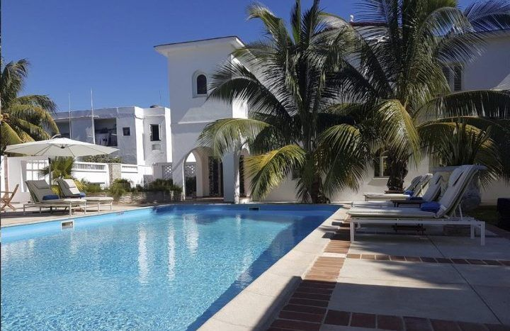
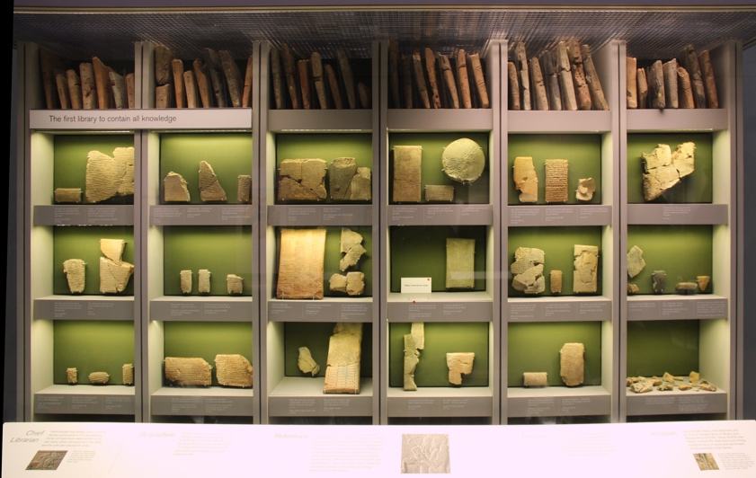
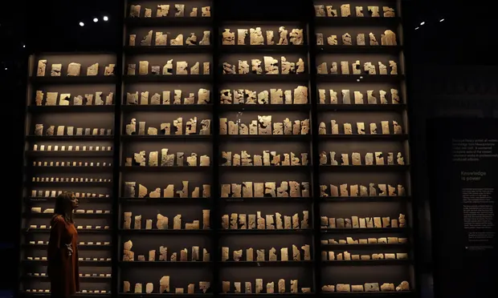
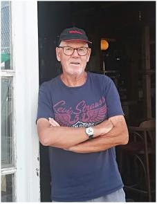

Copyright © John Francis Kinsella, 2021
all rights reserved
First published by Banksterbooks, 2021
Cover & contents designed by Banksterbooks
This is an authorised free edition from www.obooko.com
Although you do not have to pay for this book, the author’s intellectual property rights remain fully protected by international Copyright laws. You are licensed to use this digital copy strictly for your personal enjoyment only. This edition must not be hosted or redistributed on other websites without the author’s written permission nor offered for sale in any form. If you paid for this book, or to gain access to it, we suggest you demand a refund and report the transaction to the author and Obooko.
banksterbooks@gmail.com
270220211610
BOOK V

CUBA
Have you read the first four books of The Gilgamesh Project?
Other books by John Francis Kinsella
for
Tilla, Selma, Eléonore, Noé, Xaver, Elyas, Adèle, Camille and Antoine
Virtually every activity in modern life—growing things, making things, getting around from place to place—involves releasing greenhouse gases, and as time goes on, more people will be living this modern lifestyle. That’s good, because it means their lives are getting better. Yet if nothing else changes, the world will keep producing greenhouse gases, climate change will keep getting worse, and the impact on humans will in all likelihood be catastrophic.
Bill Gates
The Municipal Gallery Revisited
I
Around me the images of thirty years:
An ambush; pilgrims at the water-side;
Casement upon trial, half hidden by the bars,
Guarded; Griffith staring in hysterical pride;
Kevin O’Higgins’ countenance that wears
A gentle questioning look that cannot hide
A soul incapable of remorse or rest;
A revolutionary soldier kneeling to be blessed;
II
An Abbot or Archbishop with an upraised hand
Blessing the Tricolour. ‘This is not,’ I say,
‘The dead Ireland of my youth, but an Ireland
The poets have imagined, terrible and gay.‘
Before a woman’s portrait suddenly I stand,
Beautiful and gentle in her Venetian way.
I met her all but fifty years ago
For twenty minutes in some studio.
III
Heart-smitten with emotion I Sink down,
My heart recovering with covered eyes;
Wherever I had looked I had looked upon
My permanent or impermanent images:
Augusta Gregory’s son; her sister’s son,
Hugh Lane, ‘onlie begetter’ of all these;
Hazel Lavery living and dying, that tale
As though some ballad-singer had sung it all;
IV
Mancini’s portrait of Augusta Gregory,
‘Greatest since Rembrandt,’ according to John Synge;
A great ebullient portrait certainly;
But where is the brush that could show anything
Of all that pride and that humility?
And I am in despair that time may bring
Approved patterns of women or of men
But not that selfsame excellence again.
V
My mediaeval knees lack health until they bend,
But in that woman, in that household where
Honour had lived so long, all lacking found.
Childless I thought, ‘My children may find here
Deep-rooted things,’ but never foresaw its end,
And now that end has come I have not wept;
No fox can foul the lair the badger swept --
VI
(An image out of Spenser and the common tongue).
John Synge, I and Augusta Gregory, thought
All that we did, all that we said or sang
Must come from contact with the soil, from that
Contact everything Antaeus-like grew strong.
We three alone in modern times had brought
Everything down to that sole test again,
Dream of the noble and the beggar-man.
VII
And here’s John Synge himself, that rooted man,
‘Forgetting human words,’ a grave deep face.
You that would judge me, do not judge alone
This book or that, come to this hallowed place
Where my friends’ portraits hang and look thereon;
Ireland’s history in their lineaments trace;
Think where man’s glory most begins and ends,
And say my glory was I had such friends.
William Butler Yeats
Unreal City
Under the brown fog of a winter dawn,
A crowd flowed over London Bridge, so many,
I had not thought death had undone so many.
Sighs, short and infrequent, were exhaled,
And each man fixed his eyes before his feet.
Flowed up the hill and down King William Street,
To where Saint Mary Woolnoth kept the hours
With a dead sound on the final stroke of nine.
There I saw one I knew, and stopped him, crying: ‘Stetson!
You who were with me in the ships at Mylae!
‘That corpse you planted last year in your garden,
‘Has it begun to sprout? Will it bloom this year?
‘Or has the sudden frost disturbed its bed?
‘Oh keep the Dog far hence, that’s friend to men,
‘Or with his nails he’ll dig it up again!
‘You! hypocrite lecteur!—mon semblable,—mon frère!’
TS Eliot
We can think thoughts wildly, but if we do not have the wherewithal to convert them into action, they will remain thoughts. … History acts in unpredictable ways. Events in history, however, necessarily take on a structure or organization that must accord with their energetic components.
Richard Newbold Adams
PAT KENNEDY HAD A DEBT TO Austen Henry Layard, a 19th century archaeologist whose discoveries marked history, like Pat’s would, though for different reasons. Unlike Layard, Pat would live to see the impact of his discoveries. How long into the future he would live, that was yet to be seen, only time would tell—logical no! But if things went the way he planed perhaps as long as 150, 200 years, or maybe much more.
The important thing was he believed he would be the first person to live forever, at least in terms of human imagination, hopefully as long as Methuselah, the biblical patriarch, son of Enoch, father of Lamech, and the grandfather of Noah. Who according to the story told in Book of Genesis lived to the age of 969.
As for the archaeologist he had been dead for more than a century.
Layard had been born into a wealthy English family, in Paris, in 1817, and by fate was destined to become the discoverer of the library of Ashurbanipal, King of Assyria, King of Sumer and Akkad, King of the Lands, King of the Four Corners of the World, King of the Universe.
Much of Layard’s childhood was spent in Italy, where acquired what was to be a life long passion for the fine arts and a love of travel from his father. After schooling in England, France and Switzerland, he trained to become a lawyer spending six years in the law offices of his uncle, Benjamin Austen, in London. He then set his mind on a career in the Civil Service in Ceylon and in 1839 started out on an overland journey to Asia, wandering and exploring as he went.
However, things turned out differently, when in Constantinople—soon to become Istanbul, he made the acquaintance of Sir Stratford Canning, the British Ambassador to the Ottoman Empire, who employed him in various unofficial diplomatic missions in European Turkey. Then in 1845, Leyard left Constantinople to explore the ruins of Assyria, part of the Ottoman Empire, after becoming fascinated by the idea of finding the site of Nineveh
In Mesopotamia, near Mosul, his curiosity turned to the ruins of Nimrud on the Tigris, and by the great mound of Kuyunjik, already partly excavated by Paul-Emile Botta.
No sooner than Layard’s excavations commenced than numerous clay tablets inscribed with cuneiform texts were discovered in what appeared to be an archive which had been part of a palace buried beneath the mound. The archive was what remained of the Royal Assyrian Library created by King Ashurbanipal.
The discovery of the Royal Assyrian Library revealed the unknown history of Mesopotamia, its civilisation, laws, science, medicine, magic, and literature. When Layard published his extraordinary book, Nineveh and Its Remains, it was a resounding success marking a new chapter in the history and archaeology of the Near East.
A few years later, George Smith’s discovery of the Flood Tablet became a turning point in biblical studies showing the links between ancient Israel and its neighbouring civilisations.
* * *
It was wet miserable morning for the month of May when Pat together with his friend John Francis finally visited the Department of the Middle East at the British Museum in London. There they made their way to the Mesopotamian collection and the Assyrian rooms. Pat was only vaguely familiar with the history of that region—Babylonia and Assyria, and he counted on John to guide him through ancient Middle Eastern history, the complexities of which were as great as those of today after an interval of several thousand years.
Pat had visited the Pergamon Museum in Berlin where he had been struck by the extraordinary Ishtar Gate and the words inscribed on it in cuneiform:
Nebuchadnezzar, King of Babylon, the pious prince appointed by the will of Marduk, the highest priestly prince, beloved of Nabu, of prudent deliberation, who has learnt to embrace wisdom, who fathomed Their (Marduk and Nabu) godly being and pays reverence to their Majesty, the untiring Governor, who always has at heart the care of the cult of Esagila and Ezida and is constantly concerned with the well being of Babylon and Borsippa, the wise, the humble, the caretaker of Esagila and Ezida, the first born son of Nabopolassar, the King of Babylon, am I.
Both gate entrances of the Imgur-Ellil and Nemetti-Ellil following the filling of the street from Babylon had become increasingly lower. I pulled down these gates and laid their foundations at the water table with asphalt and bricks and had them made of bricks with blue stone on which wonderful bulls and dragons were depicted. I covered their roofs by laying majestic cedars lengthwise over them. I fixed doors of cedar wood adorned with bronze at all the gate openings. I placed wild bulls and ferocious dragons in the gateways and thus adorned them with luxurious splendor so that Mankind might gaze on them in wonder.
I let the temple of Esiskursiskur, the highest festival house of Marduk, the lord of the gods, a place of joy and jubilation for the major and minor deities, be built firm like a mountain in the precinct of Babylon of asphalt and fired bricks.
Now at last Pat stood before the tablets inscribed with the Epic of Gilgamesh, the story of the legendary King of Uruk, dating from the Third Dynasty of Ur, circa 2100BC, after whom Pat had named his project, his plan to live forever.

The tablets had been translated by George Smith, a Londoner born in 1840 in a dismal tenement in Chelsea, not the same kind of Chelsea where Pat and John owned their splendid London homes.
At the age of 14, Smith was apprenticed at printing firm of Messrs. Bradbury and Evans, a printers where he was taught to engrave the printing plates for bank notes. After reading Layard’s book describing his work at Nineveh, Smith became interested in cuneiform and started to frequent the British Museum not far from his work place on Fleet Street, where, at the age of 32 he was appointed assistant in what was then the Near Eastern Department. There he worked matching together and deciphering pieces amongst the countless thousands of clay fragments that archaeologists had shipped back to London from Nineveh a quarter of a century before.
Most of the fragments bore records of daily life in Assyria during the 7th and 8th centuries BC, accounts referring to oxen, slaves, casks of wine, petitions to kings, contracts, treaties, prayers and omens.

It was like that he stumbled on a fragment of a tablet that described a flood, a ship caught on a mountain and a bird sent out in search of dry land, which recalled the story of the biblical flood, in ancient Mesopotamia, including an ark and a Babylonian Noah who went by the strange name of Utnapishtim.
The tablet, encrusted with a thick lime-like deposit was cleaned and to his excitement he realised he had discovered a remarkable document, what was to be known as The Epic of Gilgamesh, the account of the eponymous hero's exploits and what proved to be one of human history’s oldest known works of literature.
Smith went on to become the world's leading expert in the ancient Akkadian language and write the first true history of Mesopotamia's long-lost Assyrian Empire, publishing the first translations of major Babylonian literary texts.
In 1872 Smith presented to the Society of Biblical Archaeology a paper entitled The Chaldean Account of the Deluge with a translation and discussion of the fragments, creating a sensation and huge public interest in Babylonian history and cuneiform prompting Edwin Arnold, editor of the Daily Telegraph, to fund an expedition headed by Smith to Iraq in January 1873.
Smith, who had never traveled outside of England and could not speak Arabic, Turkish or Persian, arrived in the provincial capital of Mosul, where he discovered the vast, flat mounds that Austin Henry Layard had seen in 1840. Kouyunjik, the largest of these, was 12 metres high, 1,500 long and 500 wide, pitted with holes and trenches dug by Layard and his Iraqi assistant Hormuzd Rassam many years before.
Smith had convinced the Daily Telegraph to finance the expedition on the vague hope that he would be able to find a missing pieces of the Flood tablet, a task that seemed to be like looking for a needle in a haystack.
Hiring labourers from the surrounding villages he began to enlarge Rassam’s old dig and incredibly by beginners luck Smith found a piece containing the missing part of the Flood story just one week after he had started work on the site, inscribed with the words: ‘Into the midst of it thy grain, thy furniture, and thy goods, thy wealth, thy woman servants, thy female slaves...the animals of the field all, I will gather and I will send to thee, and they shall be enclosed in thy door.’
Smith later described his find in his Assyrian Discoveries, published in 1875: ‘On the 14th of May.... I sat down to examine the store of fragments of cuneiform inscription from the day's digging, taking out and brushing off the earth from the fragments to read their contents. On cleaning one of them I found to my surprise and gratification that it contained the greater portion of seventeen lines of inscription belonging to the first column of The Chaldean Account of the Deluge.’
However, the fragment was not from Gilgamesh at all, but an even older version of the Flood story, dating from perhaps 1800BC.
Almost a century later, following the Gulf War of 1991, hundreds of thousands of objects, including many cuneiform tablets were looted from archaeological sites across Iraq, including the fragment of a tablet that contained part of The Gilgamesh Epic.
In 2014, that tablet was sold by the auction house Christie’s to Hobby Lobby, an art and crafts chain store, for show in the Museum of the Bible in Washington, in a private sale for 1,674,000 dollars. Hobby Lobby subsequently accused Christie’s of deceitful and fraudulent conduct relating to the ancient tablet after US authorities ruled it should be returned to Iraq.
It was a warning to Pat Kennedy about the Wallace Codex and its provenance.
We have sufficient for everybody’s needs, not for greed
M. K. Gandhi
ARKADY DEMITRIEV ENGAGED the services of Anton Fedotov, known to the Russian intelligence services for his speciality—hacking business networks, not to commit vulgar fraud, but to collect valuable technical and marketing data that could be moneyed in the form of research studies by Fedotov’s team.
Hackers were also part of Russia’s cyber forces, often described as research institutes, whose role was to penetrate networks and mount cyber attacks.
Fedotov proposed setting-up hacks into LifeGen, Phytotech and Belpharma’s IT systems as well as the personal devices of the persons targeted—their smartphones and laptops, in the search for clues, starting with messages and keywords that transmitted the tight web of communications between Kennedy and his close friends and associates.
Fedotov, a former GRU specialist, worked on of the edge of the darknet, a place where criminals traded in information linked to the most sordid aspects of human nature, from the vilest forms of pornography to drugs, terror, arms trafficking and kompromat.
The Russian saw himself as a security expert, a businessman, more than a cut above the rest of his kind that he considered a mainly criminal community.
Hacking was a Russian speciality that was allowed to freewheel in Russia, given the Kremlin’s attitude, one that verged on complaisance, seeing it as an arm that undermined its enemies, namely the West. It couldn’t have contrasted more sharply with the position of the US and other Western nations, all of which severely reprehended and punished hacking.
It was absurdly easy to inconspicuously insert backdoor malware tools, which had the ability to transfer files and execute utilities, on the personal devices of individuals like those of unwary targets like Maria Scmitt and Anna Basurko. On the other hand Phytotech had a decent firewall, though it was nothing comparable to that of LifeGen which was girded by George Pyke’s Ares cyber security protection system.
Pat Kennedy’s devices were on an altogether different plane, almost impossible to breach, however, once his communications, like those of LifeGen and Phytotech, arrived on the devices of unprotected third parties they could be more easily hacked.
It was not long before Fedotov delivered a list of keywords to Demitriev who at a glance was able to focus his attention on three of them—Gilgamesh, Galenus and codex.
The first two puzzled him, but a quick check with Wikipedia turned up the Legend of Gilgamesh, as for Galenus it seemed he had been an ancient Roman physician.
Then there was Nahuatl, which he knew was a language spoken by a lot of Mexicans, then checking it out he learnt it was the language of the Aztecs, which was the lingua franca of their empire. More interesting were the famous codices had been composed in a written version of the same language, one which had continued after the conquest and had been used by Spanish friars to write a Nahuatl version of The Catechism, in 1553, which served to decode the surviving Aztec codices in the 19th and 20th centuries.
PAT AWOKE WITH A START, HE HAD DREAMT he was in a desert, a Mexican desert, an ochre landscape covered by shrubs and cacti, under a blazing sun, in a desperate search for Larrea tridanta bushes, he was lost and haggard, he grabbed at the vegetation and in doing so he saw his hands, dirty, grimy with dust and sand, his nails long and cracked, the back of his hands wrinkled and burnt by the sun.
With his heart still beating he went into his bathroom and washed his face with cold water. Looking in the mirror he studied his appearance, everything appeared normal, that is to say youthful, his skin tight, smooth, his hair black, his eyes clear. He looked at his hands, they were sleek, his nails well trimmed.
He returned to his bed, looked in the drawer of his side table. The glass phial of Galenus-1 pills was there exactly as he’d left it when he had turned in.
He smiled, still a little shaken, a bad dream, but not the first one and with a recurring theme.
Pat was alone, Lili and the children had returned to Hong Kong for the Spring Festival—the Chinese New Year, leaving him aboard his yacht anchored off the coast at Beaulieu, where he had taken refuge as another Covid surged through France.
He looked at his watch, it was just before four in the morning, too early to be up. He lay down and switched off the light and soon fell into an uneasy sleep.
It was mid-day when he called Rob McGoldrick, his friend and physician, at his office in London. It was a routine call, part of the programme related to Galenus-1, he was in a manner of speaking a test subject, a laboratory primate. He was not alone, there was also John Francis and Rob himself had joined the trial programme.
After exchanging news Rob asked him how he felt, his health, the effects of Galenus-1. Pat had nothing new to report, his general condition was excellent.
‘Are you eating well?’
‘No problem.’
‘Your appetite’s good?’
‘Perfect.’
‘Sleeping well?’
‘Great ..., but I’ve been having some strange dreams.’
‘Oh.’
‘Yes,’ he laughed. ‘I’m in the desert, lost, looking for creosote bushes.’
Rob didn’t laugh.
‘I’m serious, I believe you.’
‘So what does it mean?’
‘I don’t know Pat ... but I’ve had similar dreams.’
DEMITRIEV LEARNT THAT THE LEADING specialist in the written Aztec language was a certain Professor Gordon Whittaker at the University of Göttingen in Germany. Whittaker had published several works on the subject and explained the hieroglyphs were far from being primitive as they had often been considered.
It seemed that the Aztec’s writing system had rivaled those of ancient Egypt, Greece and Rome which contradicted the long held idea it was a simple form of picture writing.
In fact it was suggested that the Aztec system of hieroglyphs was amongst the most sophisticated writing systems which humanity has produced.
Mexica scribes, know as tlacuilos in Nahuatl, had developed a writing form that was superior to that of the Maya and in spite of the efforts of the Catholic Church to destroy it, it had survived another 200 years.
However, pre-Conquista documents were few, very few, and of great value, not only in terms of historical documents, but also in terms of dollars.
The Rosetta Stone of the written Aztec language was the Mendoza Codex, written in 1541, soon after the conquest. As in many writing systems phonetic components were used with bisyllabic signs as in Japanese.
Tragically the libraries of the Aztecs were destroyed, an event that led to the belief that theirs was not comparable to those of ancient Egypt, Rome and Greece.
Whittaker demonstrated that the Aztec system could in fact be used to communicate every syllable of their language in written form with the possibility of transcribing countless complex words.
That was all very nice, but what did it mean to Demitriev apart from a history lesson?
Demitriev was not making much progress and his solitude gave him time to reflect on his future.
What is more certain aspects of life in Mexico reminded him of Russia. It was strange, since at the outset on his arrival in Mexico he had arrived with the arrogance of a Russian GRU agent, under the guise of a commercial attaché, in what he considered an unimportant third world country.
In spite of the presence in Mexico of criminal organisations in the form of narco cartels, its streets ruled by violent gangs, its poor pushed to emigrate to the US to escape poverty and danger, it had nothing to envy of Russia, ruled by a clique of kleptocrats, where corruption was rife, where opposition figures were still dispatched to Siberian goulags, where pollution poisoned cities like Norilsk, where vast sums of money were spent on armies and military posturing.
The facts spoke for themselves, if Mexico was a poor third world country, then so then was Russia.
His homeland had an aging population of 145 million, one of the world’s lowest fertility rates, and a GDP of 11,600 dollars per capita, compared to Mexico’s 130 million, a high birth rate and a GDP of 10,000 dollars. Mexico also covered a territory of almost 2 million square kilometres, much smaller than Russia’s, but situated in a much richer biosystem, the rich US on its northern border, the Caribbean and Central American to the east and south, the Pacific and Sea of Cortes to the West.
But there was something else that was troubling him, something that had nothing to do with Moscow, Kennedy or Belize, someone he had developed the kind of feelings for he had never experienced before, who he had been separated from by Sedov.
RETURNING TO PROVENCE, Arkady Demitriev opted for Saint-Jean-Cap-Ferrat as his base, it was off season and since he figured he would be staying some time he rented a small holiday apartment overlooking the marina, posing as a writer taking a break from Berlin, a city where many Russians lived.
From Cap-Ferrat, a peninsula overlooking Beaulieu, he could coordinate the cyber penetration of Kennedy’s interest in the region and observe at leisure the comings and goings of Kennedy on his yacht anchored in the bay about a kilometre offshore.
Without realising it Demitriev had taken to the life he discovered on the cosmopolitan Riviera, an easy way existence, in spite of the complications caused by the pandemic. He had also become introspective, tired of living out of a suitcase, as he watched others enjoy themselves, people who had the means to do as they pleased. In a sense he began to understand Vishnevsky decision to deal himself in, enjoy life. But Vishnevsky had been a banker and knew how to help himself, in a manner of speaking he had been unlucky, his best laid plans cut short by the pandemic.
Arkady Demitriev had fulfilled his role as a member of the GRU, Russia’s largest foreign intelligence agency which besides military intelligence provided economic and technological Intelligence, employing different means including cyber information warfare with advanced hacking techniques.
He had been trained at the GRU Military Academy for officers, at 50 Narodnoe Opolchenie Street, in Moscow, better known as the Conservatory. Arkady had been a brilliant student and had studied economics, cyber techniques and European languages in addition to his basic military training in self defence and communications technology in Cherepovets, a small and dismal city 500 kilometres to the north of Moscow on Lake Ladoga.
Before being posted to Mexico he had spent three years in London, his first overseas posting, under diplomatic cover as an assistant commercial attaché until he amongst others had been expelled by the British, in retaliation following the poisoning of former GRU double agent Sergei Skripal with Novichok—a deadly nerve agent.
He had performed well and was rewarded with a posting to the Russian Embassy in Mexico City, where he was given a role at its consulate in Cancun and by extension that of representation in Belize, which lay to the south of Quintana Roo, to his mind a dull tropical backwater compared to Cancun’s Mayan Riviera, but it was a former British colony and his experience in London qualified him for the job.
He now found himself under a shadow thanks to Vishnevsky and his crooked dealings, not a good thing for his career, which up to that point had been full of promise.
At the same time he couldn’t help observing how his well-off compatriots lived in London and then in Cancun and now on the French Riviera. It was far from the days of the Soviet Union and Communism. He had been a young boy when Gorbachev had dissolved the USSR and the ideology of those now distant days had no place in modern Russia where money had replaced Communism as a driving force.
CANCUN WITH ITS FIVE-STAR HOTELS, nightlife, all inclusive packages, an international airport and close proximity to the renowned archeological sites of the Yucatan Peninsula. White sands, turquoise ocean waters and an average yearly temperature of 27oC attracted tourists throughout the year from all over the world, forming a pole of attraction for job seekers from Mexico, nearby countries and beyond.
Central America and Mexico suffered extreme violence as a result of drugs and arms, both of which flowed uncontrollably across the region, from Colombia to the Mexican border. The level of violence and homicides made it the most dangerous in the world, on the level with war and terrorism in the Middle East.
Guns, drugs and poverty were the driving force of immigration from Honduras, El Salvador and Guatemala towards the US a country where 400 million firearms were in civilian hands.
Gangs and cartels fought over territory killing bystanders and hapless individuals who wandered into their territories by malchance.
The Mayan Riviera was a place where transnational crime flourished aided by the tourist industry and the constant flow, in and out, of travelers from North and South America, Europe and Russia. Cancun with its large expatriate communities was the main point of entry making it the most visited city in Latin America and the target of organised crime.
As such Cancun offered mobility and opportunity to criminal enterprises, a place where the illegal profits on the back of high cash flow from investment and the circulation of cash and foreign currencies could be laundered and invested in real estate and tourism.
Hotels, bars and nightclubs were opportunistic meeting places for where people like Demitriev and Vishnevsky could meet inconspicuously with their compatriots and criminal elements from Mexico, Central America and the Caribbean.
An added advantage for criminals in mass tourist resorts was these being highly dependent on tourism hide or denied the existence of crime and danger for fear of discouraging visitors.
In fact Cancun like the Costa del Sol in Spain was a hub for transnational crime, a geostrategic location, a meeting place to negotiate deals, a transit zone for drugs, a laundromat where the proceeds could be recycled into the legal financial system via the offshore Caribbean banking system, and finally a place where criminal elements could hide in the crowd, coming and going, and enjoy their illicit gains.
Cancun and Plays del Carmen were amongst the world’s leading tourist destinations, at the same time they were heavily dependent on tourist revenues.
Amongst the criminal elements were Italians, Romanians, Israelis, Russians and Cubans all of whom worked more or less closely with the cartels and gangs such as the Zetas, the Beltran Leyvas, the Familia Michoacana, the Valencia Valencias, the Gulf
There was no need to tell Demitriev the Russian intelligence agencies had underworld ties, he himself was part of the system, that is as an information source to to carry out any dirty work.
It was a known fact that Petrovsky, a high ranking FSB general, had personal connections with Mafia leaders accused of kidnappings and contract murders.
His explanation was that they were a valuable source of information, however, there was certainly something in return as in the case of the hitman, Tumso Osmayev, a Chechen, who had shot down VTB’s Caribbean real estate investment manager, Anton Nazarov, on a Moscow street. Osmayev had carried out as many as 60 extrajudicial killings for the FSB including those involved in financial disputes.
Cuba, a platform for the Kremlin’s interest groups such as Rostec, the Russian armaments giants, that wanted to develop a foothold in Latin America. Unlike the Soviet Union interest was not based on an overarching loyalty for Russia as a whole, but individual, company and regional interests, where the Russian elite fight for influence and resources.
In the case of Rostec, its leaders consolidate its position by taking over automobile and aircraft companies, whilst at the same time streamlining its structure and cutting out waste, along the lines of international corporations and holdings, in an attempt to make it profitable.
THE GRU, PREVIOUSLY RUSSIA’S Military Intelligence Directorate, which operates under the Defence Ministry, did not strictly speaking exist. In reality, following a series of reforms, it became the Main Office of the General Staff of the Defense Ministry.
It was specialised in military intelligence, parallel to the SVR, Russia’s Foreign Intelligence Service, its director reporting directly to Vladimir Putin, who as a former KGB colonel in East Germany closely followed overseas operations.
The GRU’s headquarters, known as the Aquarium, was a vast complex on Khoroshevskoye Highway in Moscow, a nine-story building plus a recently built facility surrounded by high fencing. Inside, besides the technical equipment were sports facilities including a swimming pool, multiple saunas, tennis courts, basketball and volleyball courts, and a winter garden.
In addition the GRU commanded Russia’s spetsnaz brigades, trained for traditional specialised warfare operations such as reconnaissance, raiding and sabotage missions, in addition to training and overseeing local proxies or mercenary units. In addition, the GRU carried out conventional intelligence work by exploiting human, signals, and electronic assets.
Beyond these combat and intelligence missions, the GRU also conducted extensive cyber, disinformation, propaganda, and assassination operations.
Demitriev after after graduating in modern languages and business studies at Moscow State University was recruited by the GRU and entered its military intelligence officers training school at the Defense Ministry’s Military Academy in Moscow—known in specialised circles as the Conservatory.
During his initial three years training an emphasis was placed on foreign languages, encryption, decryption and covert intelligence work with courses at specialised centres such as the Cherepovets Higher Military School of Radio Electronics.
He like other officers were trained as advisors, secretaries to ambassadors, and representatives of Russian businesses overseas where they could gather intelligence and cultivate assets.
Those acting under diplomatic cover became commercial attachés and military attachés at embassies and other diplomatic missions as well as international institutions and were known in Russian jargon as ‘suits‘.
There was however a third department for operations abroad, the Spetsnaz specialised in commando style operations and missions, from sabotage to combat and assassination.
GRU agents like Demitriev carried out an important part of the agencies intelligence gathering operations through deep-cover agents, who lived in foreign countries under false names. They also worked under false identities when traveling abroad on special missions, as he had in France as Milan Hasek.
Arkady Demitriev had been a young boy when the Soviet Union had been dissolved by Mikhail Gorbachev and had just enrolled as a student at Moscow State University when Vladimir Putin was elected president of the Russian Federation.
He was far removed from the Communist ideals that had inspired his father and grandfather, which did not mean he was not proud of his country and its accomplishments in war and peace.
However, after more than a ten years in the service, in the Crimea, London, Mexico and his travels in Europe and the US, he had lost his illusions and was no longer interested in medals, his father had a drawer full of those, they were worthless, sops for fools, whilst the men in the Kremlin enjoyed the lifestyles of oligarchs. He had seen how others lived and though he was no traitor, he felt used, cheated, and didn’t want to end up a penniless old man like his father who had fought in the Great Patriotic War, or his father who had seen combat in Afghanistan and suffered ignominy and despair under Gorbachev and Yeltsin.
Demitriev was afraid of ending up dead his apartment or hotel room, a suicide, or a defenestration, as happened to certain hapless GRU agents went things went wrong.
Vishnevsky had been an SVR operative at the VTB bank before branching out as an undercover agent in Cancun to spy on certain suspected dissidents and other enemies of the Kremlin, which historically had always seen as many enemies inside as outside.
Arriving in Mexico City he discovered a violent place, more so than he had been taught to expect, even for a trained GRU and former Spetsnaz officer who had participated in missions to hotspots such as Syria, the Caucasus, Crimea and the Donbass region of the Ukraine.
Taking up his post in Mexico Demitriev had inherited links to the cartels and gangs which served to undermine Moscow’s longstanding enemy—the US, in their fight to maintain their own cumbersome friends in the Caribbean namely Venezuela and Cuba.
The trouble with Latinos was their unpredictability, their tendency to prefer violent solutions. In their world life was cheap, even cheaper than that of those who crossed the Kremlin.
In Mexico the bloody war between cartels raged leaving its victims visible to all dumped in the desert and on wastelands surrounding its large cities. It was nothing unusual to find the bodies of victims left by the cartels and the gangs they controlled as reprisals or warnings to their enemies, the police or the public.
Stories of stray dogs scavenging human remains at clandestine burial sites abounded.
It was all part of the brutal war waged for the control of America’s multibillion dollar drug trade by organized crime. A carnage reminiscent of the violence practiced by the Aztecs to impose their rule.
Large swaths of Mexico were controlled by Jalisco Nueva Generación, the country’s most powerful of a dozen or so cartels, organisations that functioned like an armies, equipped with the latest weapons and vehicles, organised in paramilitary groups, posing a threat to Mexico’s stability and its elected government.
In 2021, Jalisco gunmen launched a full scale attack to assassinate Mexico City’s security chief, a clear sign that nothing was beyond their reach, a threat that undermined the nation’s security, as their numbers and arms had grown to the point they could overcome local police forces.
They had more success when they ambushed the governor of Jalisco, Aristoteles Sandoval, who was shot dead in a restaurant toilet in a carefully planned murder.
A reward of 10 million dollars was offered for the capture of the sinister El Mencho, a former police officer, head of the Jalisco cartel, in the Sierra de Ahuisculco, his mountain lair near to Guadalajara, who had resisted capture by downing an army helicopter with a rocket launcher.
Demitriev had visited the cartel’s paramilitary training camps and laboratories in Guadalajara, capital of the state of Jalisco, known as Chemical City for its production of synthetic drugs with chemicals imported via Manzanillo on the Pacific coast from China.
Mexicans described the battle waged by the government against the cartels, and between the cartels themselves, as an international conflict, its battles spilling over into the US to the north, and Belize, Guatemala and Central America to the south, causing tens of thousands of deaths annually.
A war that cost the lives of an estimated 300,000 victims between 2007–2020, a war to control the supply of drugs to North America, the world’s largest consumer, and Europe, with the cartels controlling 90% of the wholesale traffic worth 50 billion dollars a year and the business of laundering those billions via Caribbean and other tax havens.
Hadn’t Hillary Clinton declared that America’s insatiable demand for illegal drugs fueled the war, and the United States bears shared responsibility for the drug-fueled violence sweeping Mexico
Though Demitriev used gangs and cartels to further GRU objectives, it was an insidious game. He as a GRU agent knew how the Russian dark web worked, how illegal drug trading platforms such as Hydra functioned, spreading crime and misery in Russia.
Hydra with its origins in Russia’s hacking underworld, had become the largest online drug market on the planet with 2.5 million registered accounts and 400,000 regular customers, who by logging onto the Tor browser, could choose from a vast array of chemicals and pay in cryptocurrency.
It operated through a network of trusted sellers, had its own chemists, avoided arms, hitmen, viruses and porn, though drugs, fake passports, crooked SIM cards and counterfeit currencies were sold.
Copying Cold War spies, dead drops were developed to distribute drugs around the clock in Russian towns and cities, in the nooks and crannies of buildings, electrical transformer boxes, in metro stations or local parks.
Demitriev, though he was not an ideologist, knew something was wrong when at any given moment of the day or night, dozens, if not hundreds, of suspicious-looking characters could be seen scurrying around the centres of Russia’s cities and towns, burying stashes of drugs such as mephedrone, cocaine, MDMA and weed, ready to be picked up by buyers.
Hydra had created a whole new profession for young, hard-up, Russians, students, dropouts, unemployed and the like. It was like Deliveroo or Uber, except instead of delivering pizzas they delivered drugs.
At the same time, at the other end of Russian society’s scale the politico-financial oligarchy profited from another life style, in their palaces, aboard their yachts, on the French Riviera or some other sun blessed paradise.
For lack of gainful employment, scientists, engineers, programmers and mathematicians, turned to crime, hacking, drug trafficking driven by the high cost of living and low wages. It explained why there were so many hackers and why government agencies used freelance hackers to combat cyber crime or do its dirty work.
THE NEWS OF RAUL CASTRO’S step down had awakened memories of the past in Pat Kennedy's mind, of his strange adventure in 1999, when on behalf of David Castlemain, at that time head of the Irish Union Bank in Dublin, he had become involved in a tourist development project in Cuba.
Castlemain had confided to Kennedy the task of drawing up the legal documents incorporating CISCAP Construction & Development, a limited company under Irish law, with an initial capital of one hundred thousand Irish pounds, set up to provide overseas consulting services. However, at that precise moment only one hundred pounds had been paid up, as CISCAP, they hoped, would benefit from substantial financial assistance offered to Irish consultancy firms by the National Investment Board—an Irish government agency.
The directors of the company included Pat Kennedy and David Castlemain’s wife Nancy. The registered offices were established at Kennedy’s business address in Limerick City whilst they awaited approval from the National Investment Board for their financial participation in the project.
A feasibility study had been submitted to the Investment Board that described in generous terms the objectives of the new company, which included—consulting services for the creation of new hotels and tourist facilities, management and training as well as financial services.
It was the start of an improbable adventure that almost cost Pat his career in finance and accounting.
He was entrapped, naively, by a scheming official at Cuban state security branch in the Minint, when he was visited in his hotel room by a girl sent to delivery a couple of large boxes of black market Cohibas and Montecristos, Fidel Castros’ favourite cigars.
Pat remembered Lina, as she stood at the door of his room holding plastic bag in her hand with a seductive smile that displayed her fine white teeth.
‘Come in,’ he said inviting her in.
She wore flat shoes, her skirt was of a fairly respectable length and she had chosen a demure high buttoned pale blue blouse, to get past the hotel doorman. There was in theory a law against Cubans visiting hotel rooms—the patrolling Vice Squad, when it suited them, cracked down on the jinteras. On the other hand the Ministry of Tourism frowned on overzealous application of the law, it was not good for business, and the general rule was that if the girls looked well dressed enough they encountered few problems, especially when they were attractive criollas like Lina.
‘Here are the cigars,’ she opened the bag to show him. ‘Do you have the rest of the money?’
‘Yes,’ he replied handing over the 80 dollars he had prepared.
She took the money, folded the bills and deftly slipped them into a small pocket on the side of her skirt.
‘Nice room you have Pat.’
She walked over to the window. Kennedy looked at her. She had a nice figure, nice legs and was pretty.
‘Where is your brother?’
‘He had something else to do,’ she replied nonchalantly, ‘do you have something to drink?’
He opened the mini-bar and made a gesture, indicating she could choose what she wanted.
‘An orange juice will be OK,’ she smiled sitting on the edge of the bed and crossing her legs.
‘Would you like me to stay for a while?’ she asked him coyly.
‘If you like,’ he replied with a forced air of disinterest, trying to hide his mounting excitement as he realised that he was being propositioned.
* * *
The telephone rang, it was his friend Mulligan. Kennedy lay naked on the large bed, his skin red from sunburn; he had been in Lina’s arms for thirty minutes.
‘Oh! Hallo John. Well I’m a little tired, a bit of a headache. I think it’s the jet lag or the sun. Why don’t we meet later!’ He put down the phone and returned to Lina who waited patiently looking at him with her large dark eyes. She knew instinctively that she had found a willing benefactor whom she could count on for as long as he was in Cuba, and perhaps a little longer.
A surveillance report reached the desk of the head of security at Cuban Ministry of the Interior some hours later. He was pleased with the information that his men had collected. A talk with the girl, Lina, would convince her to keep him updated on the movements of the Irishman, Kennedy. He wondered if he was related to the other Kennedy who had caused so much trouble for Cuba, in any case Colonel Cienfuegos would be very happy to know his instructions were being carefully followed to the letter.
Colombia 1999
DAN OBERMAN TOLD KENNEDY that his friend Delrios was looking at a project to export his Colombian coffee to Europe. Ireland with its Tax Free Zones looked to them like an ideal distribution point for the UK and continental markets and Delrios was willing to finance the setting up a trading company in Ireland for that purpose.
The idea appealed to Kennedy, who for a long time had been seduced by the irrational idea of converting the Irish, a nation of tea drinkers, to drinking coffee. It was certainly lot smarter than drinking ‘a nice cup of tea’. Then when Delrios proposed visiting the coffee plantations that his organisation ran in the south of the country, the temptation was too great to resist.
It was a one hour flight from Baranquilla, in the Lear Jet sent by Delrios' friends, over the Cordillera Centrale to the jungle air strip near to the coffee plantations, where Carlos Ortega’s organisation ran a large hacienda, fifty kilometres from Puerto Asis, near the frontier with Ecuador, one thousand two hundred kilometres directly to the south of Baranquilla.
Ortega’s source of income came not only from corruption and money laundering, but also from a hardy Andean shrub that grew notably in Peru and Colombia, it was called of Erythroxylum coca also known as Amazonian coca. It was from this plant that cocaine was extracted.
Puerto Asis was a town of 80,000 people in the Province of Putumayo, a wild frontier town with its mostly unpaved streets and where men paraded with guns in their belts. The surrounding jungle was controlled by the Farc guerrillas, who watched over the largest source of cocaine production in South America with plantations covering some 60,000 hectares of coca.
The production of coca had more than doubled in Colombia. It was mainly produced in the regions of Putumayo and Cacqueta, which were the strongholds of the left wing guerrilla movement, the Farc, in the mountainous jungles in the south of the country, on the borders with Peru and Ecuador; countries that also illegally exported coca paste to Colombia where it was refined into cocaine.
The Farc, which was the largest guerrilla group in the country, had 17,000 men under arms and protected the drug industry, whilst extracting a tax of some 500 million dollars a year, to buy arms and sustain their war with the Colombian government. They were not alone, nor were the left wing organisations the only culprits, right wing paramilitaries groups also owned and operated laboratories for the processing of the drug.
More than 100,000 Colombians had lost their lives and another 300,000 had fled their homes as a result of the civil war in the country and the wealthy lived in fear of kidnapping and extortion.
Colombia was the home to the world’s biggest narco-industry, accounting for 80% of the cocaine imported by the US. After a decade of war against cocaine the supply of the drug in the US remained abundant and its price stable.
The US in its fight against the cocaine industry gave little consideration for democracy and human rights. At the same time as it had supplied arms to fight the drug barons, it had provided money laundering services and chemicals for the refining of the cocaine. The CIA in its struggle against drugs monitored the activities of all persons or organisations, political or otherwise, suspected of being involved in the drug industry, amongst the suspects was Carlos Ortega.
On the airstrip were several small aircraft were parked including a white and blue Bell 407 helicopter which Delrios proudly pointed out to Kennedy.
‘Our latest acquisition!’
‘Very nice,’ replied Kennedy politely. His knowledge of helicopters being about as great as that of his knowledge on the history of pre-Columbian civilisations.
‘It cost us one and a half million dollars. It’s the only way we can get around in this part of the country, there are virtually no roads, only trails.’
‘Business must be good,’ Kennedy remarked.
‘Coffee is having a good year. Crops were bad in Brazil, bad weather. We also have emerald mines in the north, not far from Bogota, which are doing quite well, there’s plenty of money around with the American economy booming.’
Delrios did not mention the thousands of kilos of cocaine that left regularly for the US and other destinations, which enabled them to finance the purchase of equipment and materials for their business operations as well as arms.
The Lear Jet, owned by one of Ortega’s Swiss offshore companies for tax and other purposes, had a six hour range, capable of transatlantic runs, following a northern route via Reykjavik, Bangor, Miami and Baranquilla, or alternatively to the south via Sint Maarten and Las Palmas to southern European destinations. The refueling stopovers were compensated by the privacy and the availability of the aircraft. They were fitted with eight comfortable seats that could be reclined into couchettes. Normally the jet carried only four passengers for space and comfort on transatlantic flights.
It was the first time that Kennedy had been in such a region. He had watched the last vestige of civilisation slipping away as the Lear Jet climbed from Baranquilla and headed south. Before them lay more than one thousand kilometres of jungles and mountains, stretching out on all sides, to the border with Ecuador.
Once arrived at the plantation Kennedy had an intense feeling of isolation and distance from the rest of the world. The people were different, they seemed rugged and hard. There were Indians who looked wild and the whites looked uncivilised. He stuck closely to Oberman and the pilot.
The hacienda was magnificent, just as in a Western he thought, though more exotic, green and without the dust. There were horses and what looked like cowboys though he saw few cattle. To his alarm many of the men carried arms.
That evening they ate a parilla of beef chuletas to the buzz of insects that flittered in the lighting over the terrace. In addition to Delrios, Oberman and their pilot, Peter Davy, a Brit, there were several men he had not met before including army officers in their uniforms. Delrios explained to Kennedy that an early visit to the coffee plantations had been organised for the next day. He then proposed that he join an army operation in the nearby jungle, as an observer, to close down an illegal coca paste factory. He assured Kennedy that there was not the slightest risk.
Kennedy wondered why the army should be used to close down a factory, he was confused by coca, was it another version of cocoa, a chocolate drink, or coke as in Coke Cola, in any case why should it be illegal. Not wanting to appear stupid he kept his questions to himself and nodded his agreement to Delrios, who snapped out orders in Spanish to one of the military men for the next day’s operation.
They set out at six thirty the next morning to the coffee plantations that lay on the surrounding hills. They turned out to be disappointing and of only mild interest to Kennedy, once he had seen that the plantations were nothing more than endless rows of uninteresting green bushes, with the berries ripening on their small branches. It was too early to be up for the likes of inspecting berries on coffee bushes. The essential was that he had seen them and could be considered an expert back in Ireland.
In the not too far distance he saw the mist clinging to the mountains and the canopy of the dense jungle that stretched like a carpet before his eyes. The view looked menacing as he imagined his plane crashing down into the endless jungle. He was no longer sure that his presence was all that important for the army operation. He had no choice as he was quickly driven to the airstrip and put aboard an army helicopter. The helicopter flew low over the jungle and thirty minutes later they circled and landed in a clearing, where they joined a small army unit ready to leave for the drug trafficker’s jungle factory.
The group set out by army Jeeps over muddy laterite trails to a meeting point about an hour’s drive over the jungle covered hills to meet up with the main group. The roads were simple trails, there were few means of transport, the local population travelled mostly by river.
He was introduced to an officer who explained in a rapid Spanish to his guide the outline of the operation. Kennedy was uneasy to see how heavily armed the men were, and could not help noting how tight their jaws were, it was not the kind of rabbit shoot he was used to.
Kennedy dimly began to understand that the operation was against an illegal drug factory, but was confused by the roles of Delrios and Ortega that seemed vaguely ambiguous to him. The army was in effect protecting their interests against encroachment by right wing independent paramilitary groups that fought both the Farc and sometimes the government.
It was a complex arrangement where the territory was divided into a mosaic of rival interests, where the army whilst looking after its own business activities tried to maintain a certain status quo between the warring factions.
The English spoken by the officer in charge and the guide was difficult to follow. Kennedy wished that that Oberman or Davy had remained with him. What at first glance had seemed to be an interesting outing was beginning to take on an alarming air. The other two men had left that morning on a trip up to Baranquilla and back, to deliver some important packages for Delrios and pick up communications equipment that had just arrived from Panama.
They continued a short distance by jeep over the slippery trail to a clearing where they continued by foot. They were preceded by heavily armed soldiers who advanced cautiously towards the site of the suspected narcotics factory.
There was a sudden stutter of automatic rifle fire. The soldiers ducked and Kennedy dived into the rain sodden undergrowth and mud. There was a silence, the acrid blue smoke from the gunfire hung in the damp air, then the soldiers cautiously continued their advance towards the jungle factory. Kennedy picked himself up brushing the mud and damp leaves from his clothes, his heart beating at a speed he had never before experienced.
The makeshift camp was abandoned, as such camps usually were a couple of hours or even less before the arrival of the military. Cooking fires were still smoking. The firing had been simply a tactic to frighten those who may have remained in the camp.
There was a motley collection of makeshift huts constructed from branches and rough planks covered with corrugated iron roofs and palm fronds. In a sump dug into the earth coca paste was in preparation and the crude tools necessary lay where they had been precipitously abandoned.
Coca was cultivated by poor farmers and the leaves were harvested by Indians, transported by foot in plastic sacks to the factories where it was transformed into a crude paste. The process was simple; the coca leaves were dried and immersed in a mixture of sulphuric acid and kerosene. The mixture was left to macerate for some hours and then filtered and dried into a paste which could then be transported to the laboratories in the north of the country.
The military officer explained through a translator for the benefit of Kennedy that the jungle factory would be burnt and all the material destroyed. Kennedy nodded seriously wondering whether the whole operation had not been set up for his sole benefit.
Another factory would be set up in a day or two to replace it and business would continue as usual once the military had returned to their base.
Informants were everywhere, brothers, sisters, cousins, and friends, on both sides exchanged information on operations planned by the authorities. It was a game of hide and seek where both parties pretended not to know where the other was.
The Colombian armed forces were too small and lacked mobility as well as the means to carry out an effective combat against the narco-industry mercenaries.
The hacienda was situated amongst the vast coffee plantations that covered the nearby hills. The plantations were surrounded by the dense jungle and mountains, in a region accessible by air or a long and difficult journey overland. The plantation and its airstrip were also collection points for unrefined cocaine from the surrounding region, where poor coca growers cultivated and harvested their crops of coca leaves and transformed it into paste before it was transported north.
Police and officials were willing accomplices to the drug traffickers and the drug barons who continued to operate with impunity in the border cities with the USA. Corruption was rampant at all levels of the Latin American countries aiding and abetting the traffic of narcotics.
The coffee plantations were controlled by the Farc. Coffee was used as a cover for the much more profitable cultivation of coca, the profits of which were used for the purchase of arms and other materials in the futile struggle against the government in Bogota.
Tampico Mexico 1999
HE CHECKED-IN TO THE LA QUINTA, a motel near the border crossing and ate a pizza at Denny’s, a diner next door, where the food was mostly Mexican. Kennedy did not like Mexican food, at least the typical fare, it usually gave him a serious dose of turista. It was a mixture of things unfamiliar to him, such as tacos and tortillas, the soft sticky composition of which he could not clearly identify.
Kennedy had flown in to Houston in Texas and had rented a car to drive down to the border, an uneventful trip on a dreary flat road, it was nevertheless a good road and Kennedy enjoyed it, averaging around 70 mph in the comfortable almost new Buick.
The only town of any interest was Corpus Christi, where he made a short detour stopping to eat. The rest of the road was an endless stream of MacDonald’s and cheap diners, scattered between Holiday Inns and cut price stores.
He arrived in Brownsville in the late afternoon. The town was different, it was completely Mexicanised, many years before the population had been Black, but they had moved on to the North and the jobs it had offered at that time.
An old man at Denny’s had recounted how in the early sixties it had been typical southern town, where the main activity was the military base and the frontier post with its police and customs services. Buses had then been segregated, with blacks in the back and whites in the front. Kennedy wondered to himself what they had done with the Mexicans.
Ortega had decided to accelerate Kennedy’s involvement in his plans by having him visit one of his organisations hotel investments in Mexico and had invited him to make the detour on his next trip to Cuba. Tampico was not really a very accessible place to visit from Europe. The obvious choice for Kennedy would have been to fly to Mexico City and then take an internal flight up to Tampico.
By carefully studying the map he saw there was an alternative and he had chosen to enter Mexico by road from the USA, for the sheer pleasure of the trip. With his Limerick travel agent and their map they worked out what appeared a good flight to the border via Houston.
Kennedy had arrived in Houston from London, where as scheduled he should have taken a connecting flight to Brownsville on the American side of the border, facing the town of Matamoros close to the Gulf of Mexico.
However, he had decided to discover for Mexico for himself ‘to be as knowledgeable as the other smart Alecs’ he figured. He had had more than enough of those stuck-up Dubliners such as Castlemain, not to speak of the big city boys from London and Paris who seemed to know everything and never ceased explaining things to him, as though he was naive or worse a country bumpkin, as he suspected they saw him. After all he reasoned it was he who had introduced Arrowsmith into the business and now he would do the same with Ortega without Castlemain ‘upsetting the apple tart’.
On arrival in Houston, after a long uncomfortable flight with a turbulent jet stream, he decided he had had enough of planes for one day. He cleared immigration and collected his bags, as he was obliged to do so on entering the USA, then taking the green lane at customs he headed for the exit, abandoning his connecting flight, going directly to the car rental desk where he hired a car. He had decided to visit Texas by driving down to Brownsville, where he was informed he could drop off the car at the local airport.
The airport at Brownsville was small compared to Huston, very small. After dropping off the car he took to a taxi into the city centre where he checked into a motel, La Quinta, a stones throw from the border.
As instructed, after his arrival in Brownsville, he was to call Ortega’s man, a certain Jose Aguirra, who would drive him down to Tampico. After his visit to Tampico, Kennedy planned to fly to Mexico City and on to Havana.
He checked in and once in his room dialed the Matamoros number of Aguirra, a woman answered and informed him that he would be picked up the following morning at his motel.
From the motel room he could see the frontier control point and an impressive high fence across a river or canal, on the other side was Mexico, effectively sealed from the USA to prevent ‘wetbacks’ from crossing illegally into the country.
It was about six when he set out to explore Brownsville. The shock was rude; it was unlike any American town he had ever visited. He knew the North quite well after his yearlong sojourn in Boston twenty years previously during his work experience with the law firm, but this place was unlike anything he had ever seen apart from Cuba, but it was not exactly like Cuba either, there was much too much movement.
Perhaps, he thought, Brownsville was like Mexico. There was traffic, the coming and going of Greyhound style buses, shops, neon lights and bars. Brownsville was not rich like the rest of the USA, but it was definitely not poor.
He wandered into the shops and supermarkets where the only language he heard spoken was Spanish and where the customers and salespeople alike looked Mexican, even the advertising on the packaging was in Spanish. He felt foreign.
He wandered down what appeared to be the main shopping street, past bus stops where crowds patiently waited, their arms loaded with plastic bags and large cardboard boxes, which according to the pictures on them, contained everything from hairdryers to microwave ovens.
The shops gave way to small restaurants and bars. A little thirsty he turned into a dimly light bar and ordered a coke, he drank it slowly whilst studying the surroundings. He tried to strike up a conversation with the barman but to no avail, his Dublin accent and the barman’s Mexican English were incompatible.
A girl walked in from the street, she took a stool at the corner of the bar and ordered a drink, and then looking around she fixed her eyes on Kennedy, inquisitively for a moment, and then smiled at him. He smiled back, which she appeared to take as an invitation, taking her drink in her hand she moved to the bar stool next to him.
‘My name in Rosario,’ she held out her hand smiling. She had large white teeth and was quite pretty if that was the word, though a little too much makeup. Her wavy black hair was held together at the back of her neck by a large pink plastic clip in the form of a butterfly. She wore a black skirt and tee shirt.
‘Hello, I’m Pat.’
‘Pat! You’re from here?’
‘No, I’m from Dublin.’
She frowned, and then laughed. ‘In Texas?’
‘No Ireland.’
‘You wanna buy me a drink?’ she said, forgetting the question, which seemed too complicated for the Gringo.
‘Yesh,’
She nodded to the barman who put a Corona on the bar.
‘What are you drinking?’
‘Coke.’
‘Oh! Where are you staying Pat?’
He took out his hotel registration card and unsure of the pronunciation showed it to her.
‘La Quinta, the motel!’ she laughed placing her hand on his thigh.
‘Yesh.’ He looked down her low cut tee shirt as she leaned forward.
‘How long are you staying Pat?’
‘Just tonight, tomorrow I’m going to Tampico, driving!’
‘Tampico! I’m from Tampico! You take me with you Pat?’ she said playfully.
‘You live here in Brownsville,’ said Kennedy looking at her and thinking that she resembled Lena a little. She had that kind of skin and hair.
‘Yes, I work in a real estate agency here,’ she shrugged, ‘it’s a fairly good job, not that well paid, but I have a resident’s green card.’
They talked and Rosario worked on Kennedy, warming him up. She was serious about going to Tampico. She explained she had a week’s holiday and wanted to be back with her family for Easter, it would save her the fare and in return, if he wanted, she would be happy to show him around Tampico.
‘I’m serious Pat, what about taking me? I’ll be no problem, you have a car?’
‘Well not exactly, I have a friend who is picking me up.’
‘An American?’
‘Mexican.’
Rosario explained that she could work things out with a Mexican, who would understand her better than a Gringo. Kennedy nodded in agreement.
‘So let’s go!’ she said getting up.
The barman gave Kennedy the tab and he pulled out his dollars and pealed off twenty dollars placing them on the bar.
‘Keep the change!’ said Rosario to the barman with a wink, grabbing Kennedy by the arm and heading towards the door before he had time to react.
She walked with Kennedy to La Quinta, leaving him at the door, saying that she had to collect her bag and would return in an hour.
Rosario was as good as her word and knocked on his room door exactly one hour later. He had waited for her a little anxiously, unsure of himself, wondering whether it was a good idea or not, but when he heard the knock on his door he felt a slight movement in his crotch at the pleasurable thought of her in his bed.
Kennedy’s confidence was growing; he had the feeling of being a man in control of his destiny, jetting around the world, meeting people, women, making important decisions. His efforts were starting to pay-off, his business with Arrowsmith, the shares he had bought in Swap had made him a wealthy man, both real and on paper, and his relations with Ortega confirmed his flair for international business.
Yes, Kennedy knew where he was going; at least he thought he did. The small town accountant was making it in the world, amongst the rich and powerful.
He opened the door and Rosario entered with a smile, and then kissed him gently on the lips.
‘Did you miss me Gringo!’ she whispered in Spanish.
The next morning Jose Aguirra arrived at the hotel and was not particularly surprised to find his client Kennedy with a girl. Ortega had told him to look after Kennedy, he was important, but he had also told him that Kennedy was different to the American Gringos.
Rosario quickly explained in English, for the benefit of Kennedy, that she was Pat’s good friend. Aguirra shrugged his shoulders indifferently, if Kennedy had taken a shine to her that was his affair. He was the boss’s friend.
They got the bags into the big Ford Cruiser and set off to the border, where they joined the queue of vehicles at the US control points, crossing the border some minutes later, without the least problem. On the Mexican side, Kennedy was given a visa by what appeared to be a military man, it was quick and efficient, he was the only one to need a visa. Then a customs officer asked them if they were carrying guns, Aguirra replied no. They then headed in the direction of the road to Tampico through the centre of Matamoros.
The scene that met his eyes driving through the centre of Matamoros excited Kennedy. It was really different, bustling, and colourful, not like those lifeless American cities. There were pavements and crowds on the pavements, street sellers, and disorderly traffic.
Everything he saw on the road as they drove south was of interest to him, it was a pity that Jose drove so fast, he would make up for that, he had a few days ahead of him to discover the mysteries of Mexico. He had never visited the country, his only knowledge of it came from the Westerns he had seen in the Limerick cinema on Saturday afternoons when he had been a kid.
The road from Matamorros to Tampico was poor, with endless road works for widening the narrow, flat, road, but in spite of that they managed to average a good speed.
Jose had turned on the car radio, as all Mexicans he liked the permanent sound of music, as loud as possible. Kennedy enjoyed the music especially the Mariachis that completed the romantic image.
It was evening by the time they arrived in Tampico, the road had been long and they had stopped several times for lunch and refreshments. Rosario had slept for most of the time, but when awake she took care of Kennedy, caressing his neck and hair to remind him of her presence.
He had had a good night with Rosario and felt relaxed; he would enjoy himself over the next days. There were no important business meetings; he was as he said to himself on a tour of inspection at Ortega’s invitation. Rosario was different she was classier than Lina in Cuba, she was, how could he say it….more understanding, softer. Perhaps it was because she was not a communist. He felt relaxed and pleased with life.
He checked into the Hotel Inglaterra, which stood on the city’s main square, facing the cathedral and the administrative palacio. It was like all Central American towns. Rosario left after telling him she was going to make a quick visit to her parents. She returned to the hotel an hour later, where she joined him for dinner with low lights and soft music in a nearby restaurant.
Over dinner she listened to him attentively as he described his business achievements. He proudly explained that he knew important people in Tampico, who owned the Miramar Club Hotel, then how they would invest in his projects in the Caribbean; she listened with interest gently encouraging him.
‘You see Rosario, they would like to invest in my project, I’m playing hard to get, I’ll take their money though!’ he winked knowingly to her.
‘You are a good businessman Pat, why don’t we drink to your success.’
For once he accepted and ordered a bottle of sweet Champagne. He enjoyed it; it was not so different from Coca-Cola he thought.
He talked and talked and was pleased it seemed like Rosario was impressed. He did not remember too much after returning to the hotel and was awoken the next morning by Rosario, when American breakfast was delivered on a trolley to his room; he simply drank the coffee eager to get out and explore Tampico. He wanted to try one of the typical local cafes, which he had spotted nearby the hotel. The menu contained set breakfasts printed in Spanish and English. He noted quickly that there was not a single tourist or foreigner visible, not even in the hotel.
Ortega had made Kennedy’s reservation at the Inglaterra for his first night in Tampico. He wanted Kennedy to arrive rested and fresh for the big tour the next day. He knew that first impressions were important and did not want him to arrive directly at the Club tired in the evening after the long car drive. It would have been simpler if Kennedy had taken a flight from Matamoros to Tampico, but since he had wanted to see the country Ortega had not discouraged him, even though he knew that the coast road was flat and uninteresting with not much to see.
Aguirra had informed him that Kennedy was with a girl called Rosario, which seemed to please Ortega who had simply replied with a remark on the quality of Mexican hospitality.
Rosario now had Pat in the palm of her hand and joined him for the visit to the Club Hotel, as if it was the most natural thing in the world. Jose picked them both up at ten; they were expected at the hotel half an hour later. According to Rosario just six or seven kilometres from Tampico.
Kennedy was surprised to see that Tampico was remarkable like a Cuban town. The roads were filled with older model American cars that glided past more or less noisily in the streets of the city centre, which he noted was divided in cuadras like Havana.
Ortega’s hotel complex had been built one of the finest beaches on the northern coast of the Gulf of Mexico, not far from Tampico. The climate was a typically sub-tropical, hot and humid, with an average year round temperature of 24°C. Tampico was almost five hundred kilometres south from the Texas border. It was possible to fly directly from the USA to the Tampico International Airport and there were also daily local flights from Monterrey, Mexico City and other towns.
The Miramar Club had been developed as an all inclusive sun and sand tourist resort, mainly for North American holidaymakers during the winter season. Mexico, as part of NAFTA, the North American economic association together with Canada and the US, offered a relatively inexpensive, uncomplicated winter holiday to the middle classes with golf, tennis, sailing and other sports.
Cuba was out of bounds for the average American and the other Caribbean islands were considered by many as either too expensive, too dangerous or too foreign, the later being the case for the French West Indies.
Playa Miramar had fine white sand washed by the warm waters of the Gulf of Mexico and was surrounded by woods, that fortunately hid the Petrobas oil refinery and the poor suburbs of Tampico from the tourists eye.
Tampico was a typical Mexican town, built on the north bank of the Panuco River. It offered shopping and night life for those who wished to venture out of the club as well as the historical centre of the city with its cathedral and public buildings, which had been built over a period of four hundred, commencing with the early Spanish colonial period in the 16th century.
Nevertheless Tampico was not a traditional tourist magnet. Ortega had invested there because of its proximity to the USA, its beach and climate. It was a discrete, conveniently away from the mainstream of mass tourism, where not too many questions were asked by a city that needed to attract tourism.
After leaving the city centre the main road in the direction of the Miramar Beach gave way to a network of very poorly maintained local roads. The Ford bumped slowly over the water filled potholes through a series of extremely poor outlying villages with unmade side roads lined with ramshackle dwellings, where children played in the streets amongst barking dogs and chickens that scratched the dirt.
There was an air of ruin and decay about the shanties built in cinder blocks and where the occasional flash of scarlet Bougainvillaea seemed to mock the misery. In front of one of the homes was a small pig tethered by a piece of string to a rusty pole.
The smell of the nearby oil refinery hung heavily in the air, between the trees could be seen the crackers and flames from the excess gases that curled up against the clear blue sky. Kennedy was a little disappointed, it did not seem to him like a tropical paradise.
The road terminated abruptly at a roundabout in front of the beach where a few old cars were parked, a couple of taxis and a bus waited. On the beach stood a lone and insalubrious snack bar surrounded by an accumulation of garbage, wrappings and plastic bags on the sand.
The driver turned to the right taking what seemed to be a private road through the wooded surroundings, then following a high wall and arrived at the club five minutes later.
The wall was interrupted by two huge carved Aztec pillars supporting a heavy double gate, it was the entrance to the club and a giant bronze plaque welcomed guests with Bienvenida a Club Miramar cast in highly polished letters.
The Ford was checked-in at the gatehouse where the security guard telephoned to the reception to announce their arrival. Once past the main gate they were in another world of waterfalls, palm trees and giant cactus. Here and there were uniformed gardeners tending to the finely cut lawns and tropical plants. A few moments later they pulled up before the potted palms and flowering shrubs that adorned the steps leading to the reception area, which was designed in the form of a Maya temple, where a radiant Ortega was waiting to welcome them with the resident Mariachi band playing ‘South of the Border’.
A smiling girl offered them tropical drinks adorned by orchids on a silver tray. Boys ran around the car to take the bags. Kennedy was overwhelmed by the sudden change and the sumptuous reception offered to him, as though he was a visiting Hollywood Star.
Ortega held out both arms and to Kennedy’s embraced him, bussing him on both cheeks, then together they followed the hotel manager and assistant manager who guided the cortege to the presidential suite.
He was given the royal treatment and any negative impression was quickly fading as Ortega’s well-oiled and oft used machine was set in motion, a process that had been repeated on countless occasions for visiting to politicians, lobbyists, bankers and gangsters overwhelmed him.
The club was a model that Ortega adroitly used to demonstrate the experience of his organisation, it was also the vehicle he would use infiltrate the Ciscap project via Kennedy, who was feted during his three days in Tampico like he was never to be again to be feted. Ortega was pleased with Rosario, who had accomplished her role perfectly, having skilfully seduced Kennedy uncovering all of his plans and intentions regarding Ciscap, exactly as Ortega had planned.
About an hour before dinner Ortega joined Kennedy in his suite; it was the moment for a friendly tête-à-tête to discuss their business matters.
‘So Pat, how do you find my hotel? Impressive, no?’
‘Very impressive Señor Ortega.’
‘As you see we have the know-how and the experience.’
‘Yesh, it’s a first class operation.’
‘Good Pat, my friend, let’s get down to some serious business. Have you considered my proposals, have you talked with your partners?’
‘I have Señor Ortega.’
‘…and?’ said Ortega a little impatiently.
‘I have looked into things very carefully and we can accept a new financial shareholder, with my firm representing your interests.’
‘Excellent Pat!’ he stood up and grasped Pat by the hand shaking it and embracing him at the same time.’ Kennedy was getting used to it now, though he still thought it a little strange for grown men to go around hugging each other.
‘We are partners then!’
‘Yes.’
‘So how do we proceed?’
‘Its easy Señor Ortega, you deposit ten million pounds at the Irish Farmers Bank in Dublin.’
‘The Irish Farmers?’
‘Yes, its best if the money comes through them, it would look a bit funny coming through you directly.’
‘I see.’
Ten million was a mere trifle to Ortega; he could put in two, three, ten times that sum. The principle was to get his foot in the door.
‘I will instruct my bank to transfer the monies and will have the papers drawn-up, giving you the power of attorney to act on my behalf. As I explained before I want to keep a low profile. One other point, the concession and know-how agreement?’
‘That’s OK too. You will get the concession as the Hotel Club operator in that part of the Ciscap development.’
‘Wonderful news Pat, wonderful news.’
It was another front in his vast system for the laundering of illegal funds and the legalisation of his crooked business interests through a respectable Irish bank and development company.’
Dublin 2000
IT WAS NOT EVERY DAY THAT PAT KENNEDY put his name to a document that covered the transfer of almost ten million Irish pounds to his personal account even if it were lodged on behalf of other investors.
He signed with a flourish and pushed the documents across the table to Jim Maloney standing up at the same time and holding out his hand. He smiled broadly, but was nonplussed at the sight of Jim Maloney who seemed to shrink back, leaving Pat puzzled, his hand suspended in space.
He was vaguely aware of a noise behind him, the door opening; there was a rushing movement. Before he had time to realise what was happening he was thrown violently to the floor, face down and his arms pulled up behind him. His wrists were pinched painfully as sharp metal was clamped onto to them. The room was full of thudding bodies, falling chairs and cries. A momentary silence fell on the room and then an authoritative voice declared, ‘We are police officers, you are under arrest for importation of funds from a criminal organisation through the Irish Farmers Bank.’
Bedlam broke out again as protests filled the room. It had barely penetrated Pat’s mind what was happening as he was roughly hauled to his feet and bundled from Maloney’s office, through the public area of the bank past the astonished customers and out onto the pavement, where several police cars were waiting with their lights flashing and motors running. He was vaguely aware of the strange almost fearful stares on the faces of the curious bystanders who had gathered to look on.
‘Will somebody tell me what’s happening?’ He blurted out as he was pushed between two burly Gardai onto the back seat of one of the waiting cars, the doors were slammed and the car accelerated off with a screech of tyres and the wailing of the siren.
‘You’ll know soon enough Sir!’
The Sir was pronounced in a kind of threateningly aggressive fashion, as though it were distasteful in the police officers mouth.
‘Where are we going?’
‘You’ll see when we get there.’
They followed hot on the tail of the leading car, weaving dangerously through the Dublin traffic, which seemed to have to a stop momentarily as in a dream.
Fifteen minutes later Pat recognised the grim walls of Mountjoy prison as the cars approached the huge iron doors, which slowly swung open. The procession of cars skidded into the cobbled yard and the prisoners were quickly pushed out and led into the grey stone building and up several flights of stairs where they were separated off into different interrogation rooms.
Pat sat on a chair in the stark room, a single naked light bulb lit the room, the light was reflected off the grubby white walls, it curiously reminded him of Lena’s place in Havana He was left alone still handcuffed as the steel door closed with a heavy thud. Then there was a silence.
There were no windows and it appeared as if the room was sound proofed. It was difficult to judge how much time had passed, his hands held by the cuffs behind his back made it impossible to see his watch. He tried to collect his thoughts, understand his situation, what had happened, but it was too difficult he was in a bewildered state of shock. He was overcome by a sudden tiredness and seemed to fall into a trance-like sleep.
He was awoke by a heavy key turning the lock, the door swung open and two plain clothes men entered the room accompanied by two-uniformed Garda.
‘So Mr Kennedy, let’s go over today’s events, shall we!’ said the squat grey haired plainclothes man pulling out a packet of untipped Craven A and light a cigarette. The other man placed a cassette recorder on the table and carefully switched in on whilst one of the uniformed men approached Pat from behind and on a nod from the grey haired man removed the handcuffs.
Kennedy rubbed his sore wrists and stretched his arms painfully observing them with suspicion. His three hours of confinement had achieved the desired effect. He was frightened, but calm and ready to talk.
‘Yes Sir,’ he replied with his nervous lisp very pronounced.
‘We’ll start from the beginning then, shall we.’
‘Have you travelled recently to Colombia?’
‘Yes, I have. Why are you asking me that, I want to know why I’m here?’
‘We’ll ask the questions not you!’
‘Have you been travelling to Mexico and Miami?’
‘Yes,’ he replied sullenly.
‘What is the source of the money you transferred to your account at the Irish Union?’
‘The money is from foreign investors.’
‘We have reason to believe this money originates from the traffic of narcotics!’
‘Narcotics!’
‘Don’t be naive Mr Kennedy, you have been followed over the last six months by the European Narcotics Agency. You have frequented a Chilean well known to our services, whom we have long suspected as the legal front for money laundering on behalf of the Colombian drug cartels and the Russian Mafiya.’
Almost four hours later it seemed as if he had gone over his story a hundred times, he glanced at his watch it was just after seven and he had still no idea of what he was accused of. Slowly his confidence was returning, his interrogators were not very intelligent men. The police left the room and some minutes later one of the uniformed men returned with a mug of tea and a thick cheese sandwich, which he placed before Kennedy.
‘Get this inside of you now.’
Carlos Ortega, a drug trafficker, that sounded very unlikely, the man had an honest business. After all he was a practicing Catholic. Kennedy figured out that there must be some kind of a mistake.
The cell door opened again and he was led to the interrogation room.
‘Sit down Mr Kennedy. Tell us what you know about Mr Castlemain and his yacht?’
‘Mr Castlemain? He’s on business in Cuba!’
‘Is he now?’
‘Yes, and what’s more he can vouch for my business activities!’
‘Well I see you’re not very up to date with your information.’
‘Oh!’
‘Yes, because you see because Castlemain is missing at sea.’
‘Missing!’
‘Unfortunately yes, his yacht seems to have gone down in Rose.’
‘Rose!’
‘Yes hurricane Rose!’
The Englishman told the Gardai that Kennedy had asked him to ‘launder’ money from the sale of US Treasury Bonds by opening a bank account on behalf of a certain Kurov. The accused denied uttering the documents knowing them to be forged and with intent to defraud the bank.
Mr Desmond Rafferty of the Irish Farmers Bank said that he met the men on April 20, when Kennedy handed him the US Treasury Bounds as security for a loan. Rafferty told the court that in the twenty-five years at the bank he had never seen such bonds offered in security against such large sums of money for loans. Kennedy said he was merely acting as a broker for a 5% commission.
Mulligan, the only witness who could have given evidence in Kennedy’s favour, took off from Havana at eleven in the evening on a flight via Amsterdam to Dublin, shortly after take off he appeared to have suffered a stroke. The flight had a scheduled stop at Santiago de Cuba, where he was taken off and transported to hospital in a Cuban army ambulance. The doctors announced a massive overdose of cocaine, which resulted in a total paralysis. He spent more than three weeks in the intensive care unit before he was in condition to be brought back to Dublin. He then spent another eight weeks completely paralysed before finally moving the fingers of his left hand.
The Gardai had wanted to question Mulligan, who was suspected of aiding and abetting Kennedy. In addition he was suspected of being engaged in drug trafficking – according to the PNR report his baggage contained one kilo of pure cocaine.
Kennedy was found guilty and sentenced to five years imprisonment at the Dublin Circuit Criminal Court for attempting to defraud the Irish Farmers Bank of 10 million Irish pounds—about 13 million dollars. Judge O’Hara agreed with the prosecution counsel that Kennedy had sufficient knowledge that the bonds were forged and from a doubtful source. Kennedy was an experienced and well-qualified financial and fiscal expert and as a consequence was fully aware of his actions.
Senior officials of the Bank of Ireland had alerted the Garda Fraud Squad to the attempted fraud, when the men had asked for a very large loan purportedly to finance an international commodity trading operation by a recently set up Limerick based company, International Sugar Ltd., in which Kennedy was a director. Kennedy had presented supporting documents from a Cuban trading company to this effect. However, Garda Detective Coogan, told the court that the Cuban Embassy had no knowledge of the said company.
According to an expert witness from the US Embassy, the bonds were part of a batch of forgeries believed to have been printed in Russia.
Kennedy was due to appear in court again in July on another charge relating to counterfeit US currency, which was found at his home during the investigation into the stolen bonds by the Gardai.
Kennedy’s wife issued a statement to the effect that he was innocent and that John Castlemain the CEO of the Anglo-Irish Union bank, now missing in the Caribbean, had instructed him to assist the persons presently indicted with him. She at her husband’s request quoted words spoken from St. Peter in the New Testament:
‘Who can harm you if you devote yourselves to doing good? If you suffer the sake of Righteousness, happy are you. Do you not fear what they fear or be disturbed as they are, but bless the Lord Christ in your heart. Always have an answer ready when you are called upon to account for your hope, but give it simple and with respect. Keep your conscience clear so that those who liable and slander you may be put to shame by your upright, Christian living. Better to suffer for doing good, if it is God’s will, than for doing wrong.’
Tony Arrowsmith, a business friend of the late lamented Castlemain, screamed with laughter as he threw the Irish Times on the deck, ‘The most fuckin comical thing I have ever heard. Serves the cheating bastard right!’ and asked their chef and barman another round of drinks for Kavanagh and their two journalists friends on the Marie Galante II as they sailed from Gosier for a cruise to celebrate the acquisition of his new yacht.
As to Mulligan when he finally spoke it was a strange English mixed with languages he barely knew, Spanish and Gaelic. He was medically incapable of giving the least evidence to help Kennedy or his judges who were intent on making a political verdict to deter those who dared bring the Republic into disrepute.
The Spanish police were said to be interested in Mulligan’s wife, who was last seen in Marbella with an up and coming Irish pop guitarist living the life of a jet-set star. She had found the pilots bag that Kennedy had confided to Mulligan for safe keeping for Kurov, a Russian Jewish émigré, with big ambitions and a small brain. He was a dangerous thug and member of the Russia Brooklyn Mafiya, who operated with Ortega’s friends on Miami Beach, shot dead entering the Atlantis Casino on Ulitsa Tverskaya in Moscow. His body was sprawled in the dirty snow brightened by his blood only two days after his return from the USA. Two neat bullet holes, shot at close range, in the head, the mark of a real professional.
Ireland 2000
PAT KENNEDY’S LIFE CHANGED dramatically after being sentenced to five years imprisonment for fraud by the Dublin High Court. His lawyers had appealed, placing the blame fairly and squarely on those who had disappeared when David Castlemain’s yacht, the Marie Gallant, went down in a tropical storm off Cuba. Pat was acquitted; given the benefit of the doubt. Perhaps it had been the proverbial luck of the Irish, or a divine intervention in answer to his devout wife’s prayers. Whatever, Pat vowed never again to be caught in the kind of entanglement that had led to his terrifying brush with justice.
It was a different man who returned from the brief though grim sojourn in Dublin’s bleak Mountjoy Prison with its degrading and overcrowded conditions. Kennedy was very much chastened and his pride had taken a severe blow. He returned to his accounting practice in Limerick City where his faithful staff had pursued his modestly lucrative, but mundane, business of bookkeeping and tax returns for the county’s farmers and small businesses.
He put the experience behind him realising the world was chaotic and cruel place, ultimately impenetrable to human reason and turned all his attention to his business, reassuring his clients and rebuilding his reputation.
Thanks to the strangities of Irish law Kennedy was at the same time a certified accountant, auditor and liquidator. This curious mix had given a free rein to his brilliant and fertile mind landing him in serious trouble as he sought to escape the confinement of his small and dull Irish home town.
Somehow the storm passed. Then when his wife’s parents passed away, Margaret, an only daughter, came into a sizeable inheritance; mostly in the form of land in and around Limerick City. It was about the same time property prices in the Irish Republic started their meteoric rise. Kennedy, an opportunist at heart, jumped on the occasion, developing the constructable land, building up-market individual homes and making himself a very substantial profit. He then turned his attention to the Dublin property market where he bought land in the outlying docks area, which soon doubled in price. Then like many Irish property investors he invested in commuter developments, building new executive homes in the green fields surrounding small towns and villages within a thirty or forty minutes’ drive from the capital.
Kennedy had played his cards well during his trial before the Central Criminal Court by defending the good name of the David Castlemain, head of the Irish Union Bank, and the banker’s family. Almost two years passed before the unfortunate Castlemain was miraculously found by turtle hunters; living the life of a latter day Robinson Crusoe on an uninhabited island off the Cuban coast. Kennedy’s version of the story told in the High Court was confirmed and he was presented by the media as the innocent Irish victim of English crooks, which was not however, entirely true. As for the poor Castlemain he had lost his head, destined to pass his days interned in St. Senan’s Psychiatric Hospital, near to the small town of Enniscorthy in County Wexford.
It was the start of a new life for Pat Kennedy, his realisation when locked in Mountjoy Prison that faith could penetrate the deepest abysses of being, that justice would triumph over injustice. The understanding that faith was happiness—the ultimate goal of life, and since reason led to happiness, reason was the only true faith.
Encouraged by the turn of fate and re-established as a well-connected and prosperous businessman in Limerick City, he turned his attention to other ventures. Renewing his friendship with Michael Fitzwilliams, who in the meantime had been appointed CEO of the Irish Union Bank following his uncle’s presumed death, Pat set his sights on greater things.
After a fortuitous meeting with Jeroem Hiltermann, an Amsterdam banker, Kennedy seized the opportunity of forging a link between the Hollander and Fitzwilliams, setting up a sequence of carefully managed events that were to open the door to banking, launching him on a sudden and vertiginous rise in the world of international finance.
Today
WITH THE AUTHENTIFICATION OF A work by Cy Twombly, Maria asked Ekaterina Tuomanova to find a buyer. In a way it was a test, she had no intention of starting a collection and her aunt May Grafton agreed. It was a responsibility that neither wanted. Maria was young and didn’t see herself being stuck in one place burdened with managing a collection, besides Contemporary Art was not her thing.
The same could not be said of those that Arkady Demitriev had observed in Monaco and on the French Riviera, oligarchs like Roman Abramovich, Andrey Melnichenko, Dmitry Rybolovlev, Sergei Tarasov and Alisher Usmanov, all of whom were collectors of art, especially Rybolovlev, a client of Bouvier’s Freeport in Geneva.
There was going on for a thousand permanent Russian residents in the principality, which was a lot considering Monaco’s total population was just 37,000.
Added to that there was another 20,000 Russians living on the Riviera, between St Tropez and Menton, certain of them very rich like Suleiman Kerimov, a good many just rich or very well-off, but most were more ordinary people in jobs linked to service, real estate and tourism, which was a damn sight better than a miserable existence in a frozen industrial waste like Cherepovets. Then were the tens of thousands of Russian tourists attracted by the glamour and myth of the Riviera deep in the psych of certain Petersburgers and Muscovites which was born one and a half centuries earlier when the Empress Alexandra Feodorovna made her first visit to Nice.
In 1856, the Treaty of Paris ended the Crimean War which saw France, England, Sardinia and Turkey face off against Imperial Russia, at a time when Nice was part of part of the Kingdom of Sardinia ruled by Victor Emmanuel II, composed of two parts—Sardinia and Piedmont, the later went as far as the frontier with France, marked by the River Var, a few kilometres to the west of Nice.
Today the Czars and their families have been replaced the members of the oligarchy who had invested in villas on Cap d’Antibes or Cap-Ferrat, in Monaco or Saint-Tropez, who were emulated by billionaires from the former Soviet Empire and its satellites—Kazakhstan, Ukraine, Poland, the Czech Republic, Hungary, Romania and Slovakia.
When Demitriev read that his compatriot, Roman Abramovitch, was about to receive delivery of his new 140 metre superyacht—the Solaris, which would set the oligarch back a cool 600 million dollars, he was invaded by a feeling of disgust and envy. Whilst he himself had to be satisfied by a cramped hotel room in Old Nice or Cap-Ferrat, tracking down the work of Simmonds and friends who had swindled a few corrupt Kremlin high-ups, Abramovitch would be enjoying his yacht bought with the money thieved from ordinary Russians like himself. The yacht would come with accommodation for 38 guests, a helipad, swimming pool, beach club, lifts, gym and all the rest that could be expected on a luxury cruise ship. What was more revolting was the oligarch already owned an even bigger superyacht—the Eclipse, once described as the world’s longest private yacht, said to be equipped with an anti-missile system, and worth more than one billion dollars.
His mission had been complicated, as yet inconclusive, and as he awaited further instructions Arkady slowly began to realise it was time to think about number one. Everywhere he looked the rich were getting richer and even those he had been sent to spy on were getting richer, whatever the conclusion he figured there had to be a way he could deal himself in.
BRITAIN LED THE WORLD WITH ITS overseas territories as a mega tax haven, ahead of Switzerland, the Netherlands and Luxembourg, and Pat Kennedy knew it. His banking empire had been built on the string of pearls that stretched across the globe, they were Hong Kong, Singapore, the United Arab Emirates, Moscow, Amsterdam, London, Dublin and the Caribbean offering the greatest means ever conceived for international businesses to maximise tax avoidance.
It was Pat’s version of China’s Belt and Road Initiative he liked to joke to his clan when he was sure no outsider was listening.
The latest addition to that extraordinary system was the United Arab Emirates which offered similar services as did the traditional tax havens.
This all of course led to the question as to what was the difference between tax avoidance and tax evasion. It was not complicated—the latter was illegal, while the former was legal providing those concerned had good accountants and lawyers, which explained the success of PwC, Deloitte, Ernst & Young and KPMG, multinational professional service firms, known as the Big Four, accounting firms.
Of course taken to the extreme, aggressive tax avoidance was obviously frowned upon by tax authorities, but it simply depended on how good or clever a business’s accountants were as was amply demonstrated by Amazon and a few others.
Tax evasion, on the other hand, that is hiding assets, using fake offshore accounts and other subterfuges, was illegal, and severely reprimanded.
The fact was, as many ordinary citizens learnt to their regret, the UK held a double discourse, aggressively pursuing its honest tax payers in its zeal to collect every last penny it considered due.
Yet, at the same time its territories and former colonies were complicit in one third of the world’s tax avoidance and bore a large part of responsibility for aiding and abetting international tax tax evasion and corruption on a large scale.
Estonia had urged the UK to take action to stop regimes such as Belarus from pumping the loot siphoned from the long suffering of the Belarusian people through the City of London and its ‘arteries of money’ that allowed Lukashenko’s vicious authoritarian regime to survive.
Amongst the UK’s independent territories were Jersey, Guernsey and the Isle of Man, as well as its overseas territories and crown dependencies, amongst which were the British Virgin Islands, the Caymans Bermuda and Gibraltar, and former colonies, territories and protectorates including Hong Kong, Singapore, the UAE, Cyprus and Malta.
The tragic Barry Simmonds had been one of the bottom feeders using Belizian laws to facilitate the business of his crooked clients.
THE STORY THAT ANATOLY PETROVSKY, a high ranking FSB general, came as a shock to Arkady Demitriev, after vast unexplained sums of cash and valuables had been found in a raid on Petrovsky’s Moscow apartment.
The shock was double since it was on Petrovsky’s orders Sedov had launched the operation against Vishnevsky and his corrupt friends at the VTB bank.
Until recently Petrovsky had from the headquarters of the FSB, Russia’s most powerful intelligence agency, its sinister headquarters on Lubyanka Square, exercised the power of life and death over Russian banks and businesses.
Now it was Petrovsky’s turn to be exposed as a crook as it was revealed he had been a key figure in a vast money laundering network. It commenced when he was observed arriving in a top of the market chauffeur driven Jaguar and wearing a gold Rolex watch for a meeting with a VTB banker at Moscow’s Cafe Pushkin.
The banker had proposed a job to Petrovsky, that of vice-president of one of the group’s holdings, a real estate lender, with not only a very generous remuneration package—including a personal driver and an assistant, but also a share in the bank.
Investigations revealed that Petrovsky, whose bureau— part of the FSB’s economic crimes unit, Directorate K, the watchdog responsible for all financial and bank operations in the country overseeing banks, pension funds and insurance companies—ran what could only be described as a protection racket.
At a time when fortunes were being made by powerful men in Russia, Petrovsky and his pals came to the conclusion—if you couldn’t beat them join them.
Directorate K set up a system whereby they demanded a percentage of all cash withdrawals—0.2% and up to 3% on other transactions with bribes to drop investigations.
To ensure the functioning of the system retired FSB officers were hired for banks’ security departments to collect information and monitor cash flows.
The money laundering market had close ties to both the FSB and criminal gangs who also acted as informers and did not hesitate to use violence to enforce their rules.
Many of those arrested or silenced were the victims of internal feuds, a battle for power and influence, where for the moment the FSB had emerged as the most powerful institution in Vladimir Putin’s Russia.
Petrovsky, it seemed, had explained to his family that the piles of cash stashed at their apartment—50 million dollars, 1.8 million euros and 17 million rubles were ‘for work’.
In addition, at a downtown pad he shared with a girlfriend, investigators discovered shoeboxes, tote bags, and suitcases stuffed with cash—22 million dollars, 6.5 million euros, and 794 million rubles. In his supercharged Mercedes-Benz SUV another 200,000 dollars in cash was found.
All together he had some 100 million dollars in various currencies as well as dozens of hugely expensive watches including gold and diamond studded Patek Philippes. Added to that were four apartments and a large house in Razdory—a leafy suburb where rich Muscovites owned homes modeled on English country estates.
Arkady had been genuinely committed ideologically to what Vladimir Putin represented, the greatness of his homeland Mother Russia, victorious in the Great Patriotic Wars against against the invaders—Napoleon, the Kaiser and Hitler, his country’s achievements in science and technology as well as art and literature, the Orthodox Church and Russia’s empire.
As a student and young army officer he had admired Vladimir Putin who restored the pride of Russia after the dissolution of the USSR, destroyed by capitalism.
As a member of the intelligence services, a vast organisation, he continued a family tradition, following in the footsteps of his father and grandfathers in the belief that Russia was surrounded by enemies.
All that changed when he arrived in Mexico City four years earlier and discovered a world that was different to that he had been led to believe. His discovery of Cuba had been a greater shock, a revolutionary regime that had destroyed what had been a prosperous, if corrupt land, where the peasantry was oppressed in an enduring state of poverty and near slavery.
What had shaken his faith was the realisation that many Russians were poor, very poor compared to a good number of Mexicans, and he was reminded of the poverty in many parts of rural Russia.
The greatest shock was his first visit to the US, New York, where he had traveled with a delegation to the United Nations, and the realisation his country was nearer the third world of Mexico if the rest of the US resembled New York.
Then, visiting California and Miami he concluded the position of Russian was worse than he had thought, with the bitterly unavoidable conclusion that life in general in the US was infinitely better than that enjoyed by most Russians.
Now with Petrovsky out of action, only Sedov stood in the way to the plans he had been preparing for a different future. But for the moment Sedov seemed unaffected by Petrovsky’s downfall, Arkady would have to bide his time, and with patience the right moment would surely come.
HIGH ABOVE NICE IN CHATEAU de Gairaut lived Sergei Pugachev, another exile, a former Russian banker was now embroiled in an endless series of legal cases which had seen many of his assets seized by the French judiciary, including the chateau itself, his yacht, a chalet in the ski resort of Valberg and a villa in Saint-Jean-Cap-Ferrat.
Arkady Demitriev had heard different versions of the story from Russians living in Nice. Whatever the truth was Pugachev had been living like a prince since fleeing Russia, after he like many others in government banking circles had been suspected of stealing billions from banks and businesses.
Arkady had been one of the GRU agents engaged to investigate corruption in the state security system after Russia’s Deposit Insurance Agency was tasked with recovering funds stolen via fraudulent transactions through VTB by Vishnevsky and his friends who were suspected of funneling large sums of money into Caribbean banks.
It seemed to Arkady that everywhere he looked fraud was rampant and ex-oligarch Sergei Pugachev was no exception. Now living in Nice, Pugachev had been ordered to pay 1.3 billion euros by Russian courts for fraudulent bankruptcy. However, French courts had detected technical irregularities in the judgement, which allowed him to escape payment ... for the moment.
Pugachev’s downfall commenced with the collapse of his bank Mezhprombank, after which he decamped to the UK and then France where he became a French citizen.
Soft power was the future, there was no point in occupying a smoking ruin, a dystopian state like Syria. It was much better to occupy London through its financial and property markets, investing in hotels and football clubs rather than trying to occupy it with tanks and soldiers. Men like Roman Abramovich, an intimate of Vladimir Putin, had already a firm and well established foothold in London.
Abramovich, one of Russia’s richest men, who was the owner of Chelsea Football Club, a personality who figured regularly in the sports and society pages of the tabloid press with his beautiful wife and megayacht, had filed a defamation lawsuit against a publishing company and the author of Putin’s People for claiming that he had bought the Chelsea football club on the direct orders of Russian President Vladimir Putin, who wanted to use it as a tool of soft power.
The story was told by Sergei Pugachev, an exiled oligarch and one-time Kremlin insider, whom became unstuck when his bank, Mezhprombank, ran into difficulties with debts of more than 2.6 billion dollars. It was at that point Deposit Insurance Agency stepped in with a billion dollar lifeline, which Pugachev promptly pocketed and decamped to London.
Arkady Demitriev had seen how the system function when Igor Vishnevsky set up his business in Cancun to launder stolen money via Caribbean real estate investments on behalf of corrupt self-serving government officials.
He had long observed how the oligarchs were replaced by stoligarchs—that is to say state controlled oligarchs.
In the beginning there were seven oligarchs—Boris Berezovsky, Mikhail Friedman, Vladimir Gusinsky, Mikhail Khodorkovsky, Vladimir Potanin, Alexander Smolensky and Vladimir Vinogradov. They were the seven boyars who carved up Russia under Boris Yeltsin, plus a latecomer—Sergei Pugachev.
Abramovitch was introduced to Berezovsky in 1993 soon after the former had made his first million when he diverted a train full of crude oil to Ventspils, a Baltic port, and sold it on the international market. The in 1995, together they set up Sibneft an oil company in a fixed deal that earned them billions.
In his second term Putin began to distance himself from the oligarchs, turning to a small circle of childhood friends, named stoligarchs—state sponsored oligarchs, who now control one fifth of Russia’s economy.
Those boyars are now dead or exiled with the exception of Vladimir Potanin, now Russia’s richest man worth more than 30 billion dollars, and Roman Abramovitch, Russia's second richest man, who lives in London.
They oligarchs were replaced by the stoligarchs, who grew out of a 1990s group known as the Ozero dacha collective that included Gennady Tymchenko and Arkady Rotenberg.
DEMITRIEV HADN’T COUNTED on George Pyke’s security firm Ares which had installed covert cameras and alarms at May Grafton’s place on Saint George’s Square in London that he and his men had broken into some months earlier. The Russians by neutralising the alarm system had delayed the fail-safe alert and by the time security firm became aware of the anomaly they had departed. Unluckily for them their visit had been filmed and Arkady Demitriev quickly identified.
Cross-checking his biometric data with Ares’ records, another name turned up, that of Milan Hasek, identified as a Czech national, who had been traced to a hotel in Nice late the previous summer, after being filmed by security cameras snooping around La Villa Contessa in Beaulieu and LifeGen’s offices in Sophia Antipolis. Hasek had been tracked down to a hotel in Nice’s Old Town.
By assuming the identity of Hasek, Demitriev had crossed a line, he had become an illegal, a spy working without official diplomatic cover as opposed to his role in Mexico and Belize where he operated with official cover, as an attaché in the diplomatic service, which provided him with diplomatic immunity if their espionage activities ran into trouble.
The fact that the alarm had been neutralised and the safe opened by the Demitriev and his accomplices had told George Pyke they were not dealing with a simple burglary, but a Russian intelligence operation for an as yet unexplained reason and their intrusion into May Grafton’s apartment had given cause for serious concern given Demitriev’s reappearance in Nice.
George Pyke immediately informed Pat Kennedy who instructed him to reinforce security with round-the-clock protection for Maria Scmitt as well as at La Villa Contessa and LifeGen.
They needn’t have worried as Demitriev had already left France for San Sebastian in Spain.
SEDOV’S SUDDEN VISIT TO THE Honorary Consul in Biarritz and San Sebastian had taken Demitriev by surprise. Unknown to Arkady he needed a reason, first it was a good moment to see what his man was doing, second like for many higher officials it gave him the excuse of escaping the unusually hot weather in Moscow, however the overriding factor was the fallout caused by Petrovsky’s arrest as FSB investigators extracted information from their prisoner and spread their net.
Sedov had two objectives, first was to stall the investigators, set up Demitriev as a fall guy to deflect blame in the Vishnevsky case, second was a visit to London an urgent get together with his partners in crime, commodity traders, whom he would press to accelerate his retirement plan before it was too late.
He chose to fly to Barcelona, a direct flight from Moscow Domododevo, as a tourist, from where he could drive to San Sebastian, pausing in Zaragoza on the way, where his grandfather had served with the Republicans in a decisive battle that took place during the Spanish Civil War in 1937. The Soviet Union and Mexico had provided the Republicans with arms and his grandfather had been an NKVD officer sent as a military advisor to the Popular Front, a coalition of Communist, Socialist and Anarchist movements.
On arrival in San Sebastian he headed for the Hotel de Londres where he dropped the car with the concierge, then found Demitriev on the terrace in the company of Jacques Gautier—an Honorary Consul of the Russian Federation in France. Gautier promptly invited him to lunch and Demitriev was excused, left to confirm arrangements in Biarritz, where later that afternoon a helicopter had been hired to fly Sedov over the O’Connelly place, a strange idea dreamt up by the Consul, more a sight seeing trip than anything else.
Whilst Sedov lunched with the Consul admiring the view of La Concha from the terrace of the Hotel de Londres y Inglaterra, Demitriev was left to hang around and wait for their call. The hotel had not been chosen by chance as a meeting place, it was where Kennedy and his friends had met with Simmonds almost a year earlier, on the lawyer’s sudden and unexplained visit from Belize to Spain.
Deep in thought, Demitriev wandered into a bar in one of the streets behind the hotel. An unexpected window had opened, the time frame was perfect, an opportunity he could not afford to miss.
He pulled out his iPhone, googled the route to Biarritz, from San Sebastian to the French border, then Hendaye and St Jean de Luz. Switching to the satellite view, he checked the images, the twists and turns on the road—not more than 40 kilometres in all, but possibly the most decisive 40 kilometres in his life.
Everything depended on the route Gautier chose.
It was nearing 3 o’clock when Sedov called to announce he would accompany Gautier in his car, and instructed Demitriev to meet them at the exit from the hotel’s car park at half-three and follow them to Biarritz, along the scenic route, through Hendaye, taking the coast road to St Jean de Luz and then Biarritz, where the helicopter had been rented.
Demitriev picked up his car, a rented BMW SUV, then parked opposite the hotel where he waited for Gautier's black Renault to appear, which he then followed, closely behind, careful not to lose them in the traffic.
They quit San Sebastian and took the autoroute to the French frontier where they turned off into Behobie. There they made a brief stop to taken a look at Isla de los Fasanes, the smallest condominium in the world, controlled alternatively by the French and Spanish governments, in six month periods. It was where Louis XIV of France and Philip IV of Spain met to sign the Treaty of the Pyrenees in 1659 to celebrate the end of the Thirty Years‘ War.
They then continued to Hendaye. Demitriev breathed easier when they chose the route along the sea front, heading north up hill and past the Chateau d’Ababie, following the corniche towards St Jean. Ahead he could see Gautier, as voluble as usual, waving his hand, certainly giving a running commentary, no doubt on Antoine Abadie’s remarkable life and the story of Winston Churchill’s visit to nearby Chateau de Bordaberry in 1945.
The road twisted and turned gently as it followed the coast, rising and falling as it approached Ciboure where it ran close to the edge of the steep cliffs, where the ancient Mesozoic and Cenozoic rock formation—a couple of hundred million years old, typical of the Pyrenean coast, was exposed in dark gray almost verticals slabs, rising 40 metres above the sea level.
Sedov admired the azure sea glinting in sun as Gautier pointed out into the distance a spot famous for the mystical Belharra, a 20 metre high wave, a surfing legend, that appeared once or twice a year, as he decelerated to about 70 km/h at a shallow dip in the road.
Demitriev taking advantage of their drop in speed, looked into his rear view mirror. There was nothing behind and the road ahead was empty. He stepped on the gas, accelerating to overtake the Honorary Consul, then drawing level with them he pulled on his sharply on his wheel, sideswiping the Renault, sending it careering through the wooden guard rail where it bounced in three or four uncontrolled leaps and bounds over the grass that partially covered the rocky slabs, taking a danger panel with it, before disappearing over the edge.
It all happened in the blink of an eye.
He took a deep breath, pulled into a lay-by a little further along the road, just after a roundabout, where the road bifurcated near to a World War II blockhouse, garishly tagged 1984. He casually looked around, then got out. A car appeared over the hill from the direction of Hendaye, its driver had seen nothing, he was in a hurry and disappeared in the direction of the autoroute. At that time of the afternoon there wasn’t much traffic, what with the fine weather holidaymakers were relaxing, enjoying the beaches in Hendaye and St Jean.
He walked over to the cliff edge, looking down he saw what was left of the Renault which had hurtled down the almost vertical cliff, landing head first onto the hard slab of sedimentary rock, tipping over onto its roof into the shallow sea. Most of it was under the water, gently rocking to and fro with the waves, just the chassis and wheels visible.
It was high tide, there was no sign of life, beyond the sea was calm reflecting the balmy mid-afternoon sun. A couple more cars passed. Nothing was visible from the road. The wooden crossbar of the safety barrier had been carried over the edge in the crash.
Demitriev turned, inspected his BMW SUV, there was a shallow dent along the front wing and a couple of lines of black paint on the driver’s door.
Looking back along the road there was not the least skid mark and the thin covering of grass and plants on the rocks lay barely disturbed.
Unhurriedly he climbed in, started the motor, pulled out, headed into the roundabout and followed the blue road signs pointing to Irun and San Sebastian in Spain. Fifteen minutes later he crossed the border, simply marked by a blue panel and a ring of golden stars—France and Spain both being part of the European Union, and continued south in the direction of Madrid.
He tuned into a French news channel, but it wasn’t until he arrived in the suburbs of Madrid four hours later he learnt the car had been discovered by walkers. Gautier was declared dead on arrival at the hospital, like his passenger, identified as a Russian tourist, killed in what seemed like a banal road accident. The bodies were recovered by the emergency services from St Jean de Luz and flown by helicopter to the main hospital in Bayonne.
It was a minor, though dramatic summer road accident, soon to be forgotten event, and like many of the crashes on the scenic corniche, it was put down to a lack of attention or speeding.
Well at least they’d got their helicopter trip, thought Demitriev, satisfied he had fulfilled his task and was now free to pursue the agency’s long term post-Castro plans in Cuba. He could forget Belize, Sedov and his corrupt friends who would be taken care of in Moscow.
It was a win-win situation, he could enjoy the money he had sequestered from the Caribbean accounts of the Belize trio, he had taken care of Sedov, and now Yulia would be waiting for him in Cuba.
He figured it would not be long before the French authorities identified Sedov, it was unlikely they would be satisfied with the idea Gautier’s friend was a banal tourist recently arrived in Barcelona from Moscow, once the discovered he was traveling on a fake passport.
Alarms would start ringing as intelligence agencies asked what a senior GRU director had been doing in France. In the same manner George Pyke’s team would ask what had happened to Demitriev.
In any case Arkady realised his cover was blown and there was no sense in hanging around to see what would happen next. There was only one conclusion and was to get out and get out fast.
The trouble was he had been operating as an illegal on Sedov's orders, which made flying out of Spain more complicated than it could have seemed. With his Russian passport he had no entry stamps to either France or Spain, and with his Czech passport he had no Russian visa.
He could have solved the visa problem by presenting himself to the Russian Embassy in Madrid, which would have issued him with a temporary diplomatic passport, but with a one-way ticket to Moscow, where he would have had difficulty explaining Sedov’s death.
That left him the choice of heading to Mexico or Cuba as Milan Hasek, a Czech national, a citizen of the European Union, a tourist who needed no visa to enter either of those countries. Yulia would be waiting for him in Havana.
He abandoned the BMW in the centre of Madrid and took a taxi to the airport where he checked into a hotel, then booked a business class seat on the Cubana flight late the following morning, destination Havana.
AS HE SAVOURED HIS CHAMPAGNE, ten kilometres above the Atlantic Ocean, Arkady Demitriev recalled how he had been attached to the Second Directorate, his task was to carry out a highly confidential mission to counter rogue elements in the GRU intelligence service, operating conduits in the Caribbean to launder the proceeds of crime and corruption that threatened to compromise the Kremlin and its leader.
Acting as a commercial attaché in Mexico City he had received orders to provide assistance to Oleg Sedov, a senior member of the state security apparatus in an investigation relating to Igor Vishnevsky and his activities linked to the VTB bank.
Vishnevsky was suspected of aiding top officials and businessmen linked to a commodity skimming scheme involving illegal foreign exchange operations, embezzlement, fraud, and corruption of state officials.
Russian security agencies were seen from abroad as a monolithic structure, however, the reality was quite different and each agency was driven by internal politics under the impulsion of powerful and conflicting interests.
As such the different security agencies were instrumentalised in the interest of politics and those that ruled over the power centres of the Russian economy, starting with the military-industrial complex that comprised over 1,300 companies—employing some two million people, then the energy and primary resources industries, followed by the hi-tech and cyber security industry, as well as other economic sectors, in a silent battle for control with the use of compromat and BPR to discredit enemies, internal and external, including the Kremlin itself.
Arkady’s mission had been to root out those linked to the VTB investment scandal in the Caribbean involving bankers and government officials.
Now that Petrovsky was arrested, Sedov, Vishnevsky, Wallace, Simmonds and Anton Nazarov—VTB’s real estate investment manager, and witnesses like May Grafton and to boot the Honorary Consul in Biarritz were dead, the VTB bank, the FSB and their commanditaires in the Kremlin could breath easily, thanks to his efforts.
In addition, thanks to the serendipitous Covid pandemic, their projects of an offshore real estate empire in the Caribbean had collapsed, at least for the moment.
Those above him had other plans, there was much to do in Cuba, a whole country to rebuild and develop with many willing friends like Fernando Regueiro.
It had been a dangerous game. Arkady hadn’t wanted to end up like Nikolai Glushkov—strangled by an assassin who then disguised his death as a suicide with a dog lead tied around his neck.
Nikolai Glushkov was of course an outspoken Kremlin critic, which Arkady, even if he harboured doubts about the men in the Kremlin, was wise enough to keep such thoughts to himself. Glushkov, once deputy director of Russian airline Aeroflot, had been murdered at his London home in 2018 and according to the inquest had been discovered lying face down in a hallway with a dog’s lead double-looped around his neck and a stepladder next to his body.
The postmortem concluded he had been murdered with fractures to his larynx and hyoid bones, signs of manual strangulation that corresponded to an attack from behind following a struggle with his a killer, compatible with a garrotted sleeper hold.
In the same manner Glushkov’s friend, Boris Berezovsky, a Russian oligarch, was found dead in 2013 strangled in the bathroom at his mansion in Berkshire. Both were high-profile London-based opponents of Vladimir Putin.
CHINA’S LEADERS WOULD NOT tolerate any form of competition, especially rich charismatic industrialists, who threatened to cast a shadow over the party. Men like Jack Ma were loose canons, dangerous, with new ideas, backed by powerful organisations, and extraordinarily rich to boot. It was the same in Russia, Mikhail Khodorkovsky had threatened the Kremlin with his political ambitions, a step that cost him ten years in a Siberian gulag, and now it was Navalny’s turn.
Even in European the emergence of politically minded nouveau rich entrepreneurs threatened the establishment, businessmen should stick to business, the old saying Go West young man was still valid for ambitious newcomers, leave politics to the establishment's coterie of approved politicians.
Pat Kennedy, as an ambitious young man, had left Ireland for the City of London and under his impulsion the Irish family banking institution owned by the Fitzwilliams family had grown into a planetary banking corporation. Kennedy had guided them through the bank's overseas expansion—Amsterdam, Moscow, Hong Kong and now Sao Paolo and Bogota.
Behind the bank were his interests in industry, as he quietly pursued his diversification with investment in research, education, IT, security services, culture, now pharmaceuticals, and the gradual emergence of political ideas, an alternative vision, a new society.
He had always been attracted by what was new in business and observed the world around him, on the lookout for the latest trends and success stories. One of those had been a couple of homegrown Irish entrepreneurs, co-founders of the digital payments firm Stripe, Patrick and John Collison, worth more than ten billion dollars, each.
The two brothers hailed from a tiny Tipperary village, Dromineer, with barely one hundred souls, just 40 kilometres to the north of Kennedy’s own home town, Limerick City. Dromineer lay on the banks of Lough Derg, a spot Pat knew well where he had fished for trout when he was a boy.
Stripe, now situated in Silicon Valley was valued at 95 billion dollars after their latest fundraising venture in which INI had participated. In little more than a decade the Collison brothers transformed Stripe, from a tech startup to a key player in the global digital economy, providing customer payment services to Google, Amazon and Uber to Deliveroo, Spotify and Peleton.
Their success was not unlike his own, small town boy makes good, and Ireland to his mind had produced more than its fair share.
Dromineer, a tiny country village, with ‘nothing but mooing cows’ Patrick Collision had quipped and was not even connected to the internet when they were lads growing up.
The pair attended MIT for less than a year before dropping out and heading west to San Francisco to found their startup.
Now, a few years younger than INI’s Liam Clancy, the Collison brothers were investing in Dublin to manage its European operations, the home to 31 of the 42 countries which Stripe operated in.
Fintech had long been one of INI’s investment sectors, its latest venture being pharmaceuticals, more precisely Belpharma.
* * *
It was another quiet evening when Henrique relaxed in the large house the company had rented for him on the outskirts of Wexford Town. It was a renovated farm house said to have been built in the 18th century, full of stylish old world charm, warm, comfortable with every amenity, except for the fact it was empty, though there was a housekeeper, who took care of everything including breakfast, cleaning and laundry.
Ireland was a strange world for Henrique, after Macau, Hong Kong, Sao Paolo and London. First the weather was damp and chilly compared to the heat and humidity he was used, even more than London. Then there were few people, the absence of noise.
It was a five minute drive into the town centre where he’d discovered a couple of pubs and restaurants, but the ambiance was melancholic with the threat of Covid in the air.
It was Thursday and he called Maria, suggesting she should visit him in Wexford for the weekend. The news was not good, her aunt, May Grafton had been hospitalised after she had suffered a stroke. Maria asked him to come to London.
Henrique drove up to Dublin, overnighted at the airport and early the next flew into London's City Airport. After spending the morning at INI’s headquarters in the Gould Tower he headed for his newly acquired pied-à-terre, a townhouse on Donne Place, ten minutes walk from Kings Road.
It was early evening when Maria arrived from Westminster Hospital after visiting her aunt who was in a serious condition in intensive care.
They ordered a meal from a nearby restaurant and whilst they waited for it to be delivered Maria updated Henrique. Since May’s place on Saint George’s Square had been broken into by Demitriev she had been unwell. The disappearance of her brother Barry had been deeply concerning, so soon after Vishnevsky's unfortunate demise, the Russian had not only become May’s friend but also a business partner.
What Maria did not tell him was her aunt had also, and rightly, suspected Vishnevsky, her partner in crime, had become close to Maria, her niece—her brother Barry’s long hidden love child.
* * *
Demitriev’s presence in the UK hadn’t gone unnoticed which explained the appearance of the British intelligent services, the last thing that May wanted, in view of her involvement in Vishnevsky’s scam and the discovery he hadn’t been exactly who he pretended he was, and when then turned up at her place the shock had been too much for her heart.
The fact was Demitriev and his friends had been of interest for a certain time to the British High Commission in Belmopan, as were the activities of all Russian diplomats attached to the Mexican Embassy in the Belizean capital, and especially since the British Secret Intelligence Service had been instructed to counter Russian meddling around the world and in particular, as far as Belize was concerned, in the Caribbean.
More commonly referred to as MI6, the Secret Intelligence Service, or SIS, was the UK’s external espionage agency, whose role was protecting the country’s interests overseas.
When Russians like Demitriev and Vishnevsky made their appearance MI6 became interested as part of an increased surveillance programme since Russian military agencies, notably the GRU, had been identified as being responsible for the Novichok nerve agent attack on the former Russian spy Sergei Skripal and his daughter in Salisbury, England.
ACROSS THE WATER, 200 KILOMETRES a little to the northeast of Cancun, lay Cuba, an island nation where almost unnoticed an event of historical significance was taking place. After 62 years, Castrist rule had come to an end with the announcement of Raul Castro’s retirement. More than six decades of economic hardship during which the Cuban people had suffered deprivation, dysfunctional communism and effective isolation from the entire Caribbean community.
Those 62 years had given Cubans living standards on par with the poorest Caribbean states, poorer than Belize, better the Haiti, very far below that the French islands of Guadeloupe and Martinique, and a poor comparison with the Dominican Republic.
Of course they had better health and education than many Central American nations, but at what price.
Trump had given another turn of the screw with more sanctions, making financial transactions with the island all but impossible, as money transfers, cruises and tourism were discouraged.
Surprisingly Biden had made no move to overturn that decision. Sanctions had caused the economy to shrink by 11% in 2020 with imports falling by 40%, the result of which was a growing scarcity of essential goods and rising prices. After 62 years the revolution had changed much in Cuba … for the worse, now all were poor. If any proof that revolution, communism and dictatorship were bad, one only had simply to look at Cuba.
Pat Kennedy’s rocambolesque and near disastrous adventure in Cuba, more than two decades earlier, following his meeting with David Castlemain, an Irish banker, had led him to where he was today, the head of a powerful multinational banking empire.*
* Recounted in Offshore Islands by the author
Cuba was a reminder in Pat's mind of the destiny that almost certainly lay ahead for Maduro’s Venezuela, and perhaps Russia, or even China. Authoritarian regimes never lasted forever, at least they hadn’t in the past, when death had always caught up with mortal men.
* * *
Kennedy was not the only one to be interested in what was happening in Cuba, Arkady Demitriev was also watching Havana and with much more than simple curiosity. He had not only visited Cuba many times since his arrival in Mexico three years earlier, he had also maintained contacts with the Cuban Embassy in Mexico City and its consulate in Cancun.
Cuba strangely reminded him of home, of course it was different, a tropical island paradise, well, potentially a paradise. What was the same was that feeling of being controlled, observed, and more recently watched.
Arkady had been educated by the GRU, the Main Directorate of the General Staff of the Armed Forces of the Russian Federation, needless to say a military organisation, and was conditioned to be a loyal patriot, but two things had changed that, first was his special investigation, and second a chance meeting in Belize City.
It was this meeting that now undermined his previously dedicated approach, that is since he had been ordered to pursue his investigation into Igor Vishnevsky’s activities in Switzerland and France.
* * *
Unknown to Demitriev, a team from Ares, George Pyke’s highly specialised security firm, had followed him since his reappearance on the Riviera. It would have troubled him to know he had been identified as a Russian agent after being spotted prowling around Kennedy’s villa in Beaulieu and LifeGen's research centre in Sophia Antipolis.
The helicopter accident that had cost the lives of LifeGen’s two directors had alerted Sergei Tarasov to the possibility of sabotage and Demitriev’s presence reinforced those suspicions even though the enquiry into the accident had shown no evidence of foul play.
Pyke’s question was how to neutralise Demitriev in a safe way without provoking a reaction from the GRU, which meant that he had to learn more about him, not his professional life, but his hopes and aspirations, which even spies had.
There were different sources and those that knew him best were in Mexico, commencing with Mike Watson and his friend Victor Sanchez, a well-known journalist and contributor to La Politica and El Heraldo, he was specialised in international affairs and had spent several years as a foreign correspondent in Moscow.
Watson explained that to Pyke that one of Demitriev’s roles had at the outset been to channel funds to different British think-tanks, trusts and other actors backing Brexit. That was now finished, to Putin’s mind a successful mission.
More recently his role had been the surveillance of the comings and goings of Russians in Cancun, a jumping off point for money launderers who hid the fruit of corrupt politicians, government officials and businessmen.
But there were not only Russians, there were also Venezuelans and Cubans, the privileged classes who sought a respite from the straightened conditions at home, they included diplomats, politicians, high level officials, military, academic and cultural personalities.
Demitriev’s talents included a perfect mastery of the Spanish language and its Latino variations which automatically led him to working closely with the diplomatic missions of Moscow’s in Mexico City. What Sanchez had discovered was capital, it seemed Demitriev had developed a weakness for Havana. Why? Well, he said moving closer to Pyke with a knowing smile, ‘Cherchez la femme!’
* * *
Arkady first met Yulia Regueiro at a reception in Belmopan, the capital of Belize. She was on a visit from Mexico City where she had recently arrived, posted as a scientific attaché at the Cuban Embassy. Yulia, who spoke Spanish, English and Russian, was not only very attractive, but had studied medicine and worked at the West Havana Scientific Pole.
He learnt that the Cuba scientific research centre employed 30,000 people engaged in different fields of medical research, including pharmacology and genetic engineering. Yulia’s posting to Mexico City came as part of a cooperation programme in medical research, thanks not only to her scientific qualifications, but also her very privileged family in Cuba.
Her major at the Universidad de Ciencias Medicas de La Habana was tropical medicine, with postgraduate research into the use of traditional medicine in Latin America, a field where traditional medicines inherited from pre-Columbian societies overlapped allopathic medicines—that is modern medicine, essentially Western.
He tested her on questions of longevity and discovered the research center included a department specialised in longevity, ageing and health, which had been inaugurated by Fidel Castro in 1992.
Yulia’s Russian was almost accentless and soon they were talking about other things than science, medicine or diplomacy. The following weekend, back in Mexico City the met again and visited Teotihuacan the vast archaeological complex northeast of Mexico City, which with Yulia’s knowledge of the city’s history and culture gave Arkady an insight into pre-Columbian civilisation, though he was somewhat disappointed to learn it was pre-Aztec, that however was offset by the opportunity it gave him to get to know her better.
Yulia’s grandmother, a Muscovite, had arrived in Cuba in the sixties, where she met and married a Cuban diplomat close to the Castros, and their daughter, Yulia’s mother had married a high ranking government official, Fernando Regueiro whose family had a long military tradition with all the right connections—the Castros, Communism, and the Revolution.
Yulia’s stories of pre-Columbian Mexico were fascinating and Arkady fell under her charm. Then on a visit to Cuba, he was invited to an evening at her parents and was surprised to discover their finely restored Art Deco style home, between Avenidas Quinta and Septima in Havana’s Miramar district. It was elegantly furnish in a tasteful mix of modern and elegant colonial styles. The tables were laid out with an abundance of expensive foods and drinks and her parents with the guests beautifully dressed.
Until that point he had been more familiar with more ordinary and poorer Cubans, official government receptions or tourist restaurants, rubbing shoulders with relatively minor officials and army officers.
With Yulia he discovered another hidden world. In Cuba, the incomes of normal doctors, journalists and bank employees ranged from 500 to 650 pesos a month, that is between 20-27 US dollars. Six decades after the Revolution, professional Cubans struggled to eat properly with milk and dairy products scarce and a kilo of frozen meat costing half a month’s salary with the ‘libret’ system—a form of rationing.
It recalled that bad days in Moscow, when Arkady was a child, when Boris Yeltsin ruled and ordinary Russians suffered in the chaos that followed the collapse of the Soviet Union.
Russia was much better today, but privilege and corruption grated, accentuating the flagrant inequalities between top government officials and oligarchs who lived like latter-day czars, and the common folk of which Arkady was one, at least from an economic point of view.
Arkady’s sudden transfer to Europe did not arrange his friendship with Yulia, which had become more serious. During his debriefing visit to Moscow he had seen signs he did not like, the idea of war and alienation from the West, and the thought of being locked into an authoritarian system displeased him more and more, it wasn’t how he imagined the future in Russia. His travels had exposed him to another life style where he could live freer, make money, escape what had become the restrictive, controlled, life of a military agent and all that entailed.
The promise of revolutions had never materialised and he was forced to admit that even Belize, with all its shortcomings, was better off when compared to everyday life in Cuba or Venezuela, or for that matter in countries to which Moscow had preached friendship—Syria, Iran and Central Asia.
With the departure of the last Castro the future in Cuba now promised better things and besides life with Yulia, in Mexico if necessary, would be better than anything Russia could offer, as things stood, where Putin looked fixed to remain at the top for another 20 years—he had no obvious intention of quitting like Raul, who was in any case 82.
The trouble was Arkady was not the kind of rich well-connected suitor his prospective father-in-law would have hope for. There was however a solution, with an end of the Castro inheritance and the new American administration, Fernando Regueiro saw an opportunity, setting up a consulting firm specialised in security, one in which Arkady Demitriev could play a key role as Cuba opened up its economy to the outside world.
Regueiro’s privileged contacts in Moscow went back to his army days when he as a young officer had been seen action in Cuba’s military adventures in Africa and Central America when Castro not only acted as a surrogate or proxy of the USSR in its Cold War strategies, but also pursued his own assertive policies for international recognition of Cuba's independence as a revolutionary leader in the third world after having stood up to the power of the USA, winning respect from Marxist revolutionaries and the like.
In that way he could reach an arrangement with the GRU, setting up a business partnership in Cuba headed by Arkady Demitriev, which could export its security and policing know-how across the Caribbean and the Americas.
* * *
The idea that Demitriev had nurtured of being able recover something from Grafton’s collection in Switzerland had evaporated. A year had passed since the start of the Covid pandemic and though Sedov and his friends had become more or less reconciled with their losses, they had continued their criminal activities, skimming profits from the exports of Russian resource based industries in collusion with crooked managers.
That had been a mistake which had led to Sedov’s demise, a message to those who thought they could muscle in on what was now the oligarchy's closed shop.
There was no further risk from Vishnevsky’s enterprise, now forgotten, evidence showed their losses were more to do with bad luck added to which was their thievery. Vishnevsky and Wallace had become overambitious and too greedy, and had above all underestimated the danger of the Mexican gangsters they had become involved.
Now that Sedov had been eliminated Arkady had fulfilled his mission. There remained however a substantial sum of money that he had recovered from the Caribbean accounts set up by Simmonds on behalf of Wallace and Vishnevsky, which he since transferred to one of Simmonds nebulous firms that he himself now controlled thanks to the precious notebook of the defunct lawyer a mine of valuable information to be exploited in his new life in Cuba.
There remained the question of Galenus, obviously a new kind of medical treatment, since he had learnt Kennedy’s firm LifeGen and Belpharma had big plans. With Yulia's help it was a subject worth pursuing, and one with which he could perhaps work a deal with Kennedy of whom he now knew much more, thanks to Simmonds, his investigations over the previous twelve months ... and his spravka which he had gained access to at the GRU headquarters in Moscow.
Kennedy’s, file, his spravka, was thick and dated back to the banker’s first visit to Moscow, at the time when the Irishman negotiated the deal between Michael Fitzwilliams’s and Sergei Tarasov’s respective banks, almost a decade earlier.
Spravki were part of Russian life, it was said: ‘With no spravka you are an insect. But with a spravka you are a human being.’ One needed a spravka to sell a house, to register with a doctor, to have a telephone installed, to import goods, to export goods, to secure a passport or to enroll at university. Spravaki were also part of a whole mountain of information collected by Russia's intelligence agencies.
What he learnt could help him to come to an arrangement with Kennedy’s man George Pyke, head of Ares, a security firm, run along similar lines to Wagner—a Russian pseudo-private paramilitary organisation, in reality part of the GRU.
FIDEL CASTRO NOT CONTENT WITH keeping the flame of revolutionary fervour alive in Cuba had sent his army to fight wherever rebellion could be kindled or kept burning, which led to his country becoming embroiled in the Angolan conflict that lasted 27 years and involved a total of over half a million Cubans spread out over that period.
In 1970, Angola, a former Portuguese colony in Southwest Africa was in a state of political chaos. Colonised by Portugal in the 15th century, Angola had been a source of slaves for more than 300 years and more notably destined for its New World empire.
Though slavery was abolished in Portugal’s empire in 1869, it persisted on Angola’s coffee, sugar, and cotton plantations until the 20th century.
In 1926, Portugal, as it tried to maintain its pluricontinental empire, fell under a dictatorship and control over Angola tightened, in spite of the wind of change that was starting to sweep through Europe’s colonial empires. However, in 1956, backed by the USSR and its satellites, a Communist inspired guerrilla movement appeared in Angola—the National Front for the Liberation of Angola, and soon what was to be a long anti-colonial war commenced, with the US and South Africa backing the Western leaning faction, whilst the USSR and its proxies, mainly Cuba, backed the Marxist movement. The result was a geometrically variable conflict in which all parties fought each other.
Independence came in 1975, but the war continued, when the leaders of the three warring Angolan liberation movements, fought for control and the war of independence was transformed into a civil war with Zaire, South Africa, Cuba, the USSR and the US wading into the fray to support their respective favourites.
Fidel Castro aided the Communist backed movements by setting up training centres manned with Cuban advisors and instructors. The war had commenced in earnest with Cuba 10,000 kilometres from home facing up to an enemy backed by richer and more powerful allies, including South Africa and Zaire which were backed by the US.
After the South African incursion into Angola in 1975, Fidel Castro later declared: ‘Either we would sit idle, and South Africa would take over Angola, or we would make an effort to help. That was the moment. On November 5 we made the decision to send the first military unit to Angola to fight against the South African troops.’
Amongst those troops was Fernando Regueiro, who on the evening of November 4, 1975, less than two weeks after the South African backed incursion, flew from Havana to Brazzaville, with the vanguard of the Cuban army in an operation code named Carlota.
Soon an estimated 36,000 Cuban troops were in Angola, equipped with small arms, tanks, rockets, helicopters, and MiG fighter jets by Moscow, and that was just the start.
The reaction of Washington was to reinforce Cuba’s isolation from the US, a situation which has endured to this day.
Castro declared, ‘Those who once sent enslaved Africans to America perhaps never imagined that one of those places that received the slaves would send soldiers to fight for the liberation of Black Africa.’ Castro’s brother, Raul, added, ‘The blood of many African peoples flows through our vein. Only the reactionaries and imperialists are surprised by the fact that the descendants of those slaves who gave their lives for the freedom of our country have shed their blood for the freedom of their ancestors’ homeland.’
Castro, however, failed in his ambition to project Cuba as a key player onto the world scene, starting with the Battle of Bridge 14, in 1975, which cost the lives of 400 Cuban and Angolan soldiers.
The reaction of Moscow was a massive increase in military aid, which resulted in the Zairean forces being pushed out of Angola and the South African army back to the border of what is now Namibia.
That summer Angolan and Cuban leaders met in Havana to celebrate their victory, and Fernando Regueiro, the son of a revolutionary, wounded in the fighting, came home a hero and was rewarded with an important role in Cuba’s delegation to the United Nations in New York.
The long war and its overseas adventures cost Cuba dearly, not only the burden of maintaining an overseas army, which included 65,000 Cubans in Africa, but in addition Cuba’s plans for development at home were stymied.
Fernando had long since moved on, not only had the Soviet Union collapsed, but the Castro’s were now gone, relegated to history, and it was time to think of the future in which all that remained of Cuba’s role as spokesman of the third world was nothing more than a colourful legend that went with mojitos, Che T-shirts, and the motley collection of 50s American cars that provided souvenir images for tourists.
That didn’t mean the US would be returning any time soon. Relations between Russia and its friends with the US had sunk to their lowest level for a very long time after Joe Biden admitted he considered Vladimir Putin a killer.
It was a sorry state of affairs in a dangerous world, shortsighted, considering Putin would be in power long after Biden had served the two terms allowed by the US constitution, providing his health stood up to the demands of the job and providing voters elected him for a second term.
Further, it didn’t help when US intelligence reports confirmed the Kremlin had ordered its hackers and cyber criminals to meddle with the 2020 presidential elections to hurt Biden’s campaign.
In any case Cuba’s view of the US was visceral and if any development capital flowed into Cuba it would come from Europe or even China. Whilst many Latin American countries were not the greatest of Washington’s friends they did not back Cuba other than by lip-service since they did not appreciate its revolutionary past and interference with their own politics.
Venezuela was a reference for no one and neither was Cuba’s economic poverty.
LIFE HAD THROUGHOUT ALL HUMAN existence been seen as an act of creation by God in the same way as when death came its timing had also been preordained by God’s will.
Now, humanity stood at a new dawn, a moment of emancipation, when life and death could be decided without the intervention of God, when men and women were freed of the tribulations of birth and ageing.
Galenus-1 offered indefinite life and the development of embryos from stem cells with artificial uteri and ectogenesis—liberated women from nature’s constraints whilst avoiding congenital errors.
The progress in research with mammalian embryos in artificial uteros and their attachment to a uterine wall with the viable development of the nervous system, heart, stomach and limbs, now transformed Huxley’s vision into reality.
The questions Pat Kennedy asked were of a moral nature, that is how to avoid the pitfalls of his Brave New World, questions linked to life extension that concerned science in general and more specifically those of procreation in vitro and gestation in an artificial uterus.
There was little doubt in Pat's mind that humanity was on the brink of the greatest transformation since Homo habilis fashioned his first crude tools from stone pebbles.
Could the institutions of human society survive, religion, democracy, education and even justice. Pat was not even sure that democracy in its present form fulfilled its role as it no longer ensured the best candidates were selected as leaders, if it ever had, as the election of Donald Trump had shown.
Embryos developed from stem cells grown in a special growth medium in a laboratory dish were introduced into a nutrient solution in vessels placed on rollers that kept the solutions in motion and continually mixed. In this way the embryos surrounded by the nutrients in an oxygenated solution could develop without being linked by an umbilical cord to a mother.
From there different genes could be introduced into the cells to obtain improvements. It was a process that had been developed at the Weizmann Institute in Israel where scientists had succeeded in gestating mice in artificial wombs with the embryos developing normally, their hearts, visible through the glass wombs, beating steadily at a rhythm of 170 beats per minute.
The consequences of such developments to the future world Pat Kennedy planned were enormous. Men and women would be equal once the burden of childbearing was banished, carrying a child for nine months and risking women’s health and independence, in a society built mostly by men. Was it Huxley’s Brave New World? Not necessarily, it depended on how one looked at the ethics of Huxley’s world, dystopian or visionary.
In any case the future place to which the world was heading, as it now stood, was not looking good, disruptive technology would have its say given a choice between overpopulation and the destruction of the natural world.
Predictions that the Greenland ice sheet was nearing a fateful tipping point were confirmed as trillions of tonnes of melting ice flowed into the ocean as temperatures rose, which if it continued, as experts suggested it would, would see global sea level rise by seven metres, flooding vast regions of coastal living space.
Pat did not believe unborn life was sacrosanct. It was one of many values or choices in human society. Controlled births were recorded in the histories of many human societies where resources were scarce—they included the Pelly Bay Eskimos, the Rendille camel herders in the Kenya Highlands, certain Pacific Islanders, and the Nambudiri Brahmins in India.
John Francis had eloquently argued the case of Ireland in the 19th century when population exploded between 1780-1840. It was often said that the Irish population grew as a result of the introduction of the potato as a cheap form of food. He explained that was not the case elsewhere in the eighteenth-century Europe, though Malthusians had argued that populations responded relative to increases in the means of subsistence.
The other argument was that of wanting a better life and less work by dividing available resources amongst fewer mouths. That, however, went against religion, work ethic and consumption in industrial societies. In the past such arguments could hold, but when resource become finite as on an island, or on a small planet such as Earth, they were no longer valid.
The post-Covid world would certainly be a different place, as could be assumed following the announcement of the government of New Zealand: ‘When our borders fully open again, we can’t afford to simply turn on the tap to the previous immigration settings.’
The population of the UK had grown 8 million since the beginning of the new millennium, a growth rate worthy of many developing nations. That is the equivalent of a city the size of Leeds every two years, needing 500 square kilometres of land for construction. It was little wonder transport systems were unable to cope, roads became congested, health and education became inadequate, and property prices rose with accommodation not only becoming scarce but unaffordable.
The dream of emigration dream would be a thing of the past except for those who fell into the wealthier categories. Who wanted low-skilled workers when there no jobs to offer. The images of 6,000 poor immigrants swarming over the border of Spanish North African enclaves was sufficient to warn any European government of things to come.
The uncontrolled growth of miserably poor populations production of countless millions was no longer acceptable. ‘If Bill Gates, Jeff Bezos and Madonna wanted them them, then they should house them on their estates or islands,’ said Charles d’Albignac—Maria’s new friend.
‘Perhaps Jeff Bezos,’ he added, ‘should anchor his new yacht off the coast of Morocco to ready to carry the poor he felt so deeply for to his Californian home[s].' His 127 metre yacht, known as Y721, was nearing completion at a shipyard in the Netherlands at a cost about 500 million dollars, a mere drop in the ocean for the world’s richest man, whose worth stood at 200 billion, more than most African nations.
Those societies that had encouraged large families had been those that needed men to fight wars and perform hard labour—not very altruistic, especially when dressed in the cause of religion, when the value of human life was low, often in societies where slavery was common, Ancient Greece, Rome and Egypt.
For the present, resistance to growing humans outside of the human body would be ethical and legal, but not technological.
* * *
Henrique’s task at Belpharma was to pass the message that Galenus-1 was a cure for the ills of old age, an idea that was hard to dismiss in the pharmaceutical industry, one with a long tradition of snake oils. Since antiquity there had been such cure alls, and Galen himself wrote a book entitled Theriaké on a cure called theriac, which one of his patients, the Roman emperor Marcus Aurelius, took on a regular basis.
Theriac was composed of as many as sixty-four ingredients including viper’s flesh and was said to cure multiple illnesses including epilepsy, indigestion, heart trouble and swellings and fevers.
Many modern medicines had their origins in plants, one of the common of which the aspirin which was originally extracted from willow bark. In the same way the antimalarial artemisinin was developed from a traditional Chinese remedy extracted from sweet wormwood.
Galenus-1 wasn’t a cure all for diseases related to age, but a switch that acted on the cellular biological clock which halted aging, closing the gate to the onset of diseases related to senescence.
Henrique being relatively new in London was alarmed by the way the British police reacted to demonstrations, there were echoes of Hong Kong, the kind of repression he had observed over the previous four or five years. Strong-arm methods which it appeared would be reinforced by the introduction of new laws.
One of Maria’s new friends, a Frenchman, Charles d’Albignac, struck Henrique as being different to the students of his days, not that his student days were that far behind him. More right wing, it was a phenomena he had seen in Brazil, as though Marxism and all that it meant had been forgotten.
It was evident that British government ministers like Priti Patel were testing their limits by using tactics reminiscent of those used by repressive regimes around the world.
The power of the police, courts of law in matters of crime and sentencing were being reviewed by parliament, to give new powers to police firces in their role of controlling crowds with reinforced measures aimed at preventing public demonstrations.
Measures which certain observers saw as dangerously close to those taken in countries not known for their democratic traditions preferring heavy-handed tactics.
PAT WASN’T TOO WORRIED BY THE latest alert, one of those events that occasionally shook the stock markets, the difference was that now it now involved Chinese investors, in this case Bill Huang, a former hedge fund manager.
Lured by the commissions that a whale—a market heavy weight, like Huang, pulled in, Morgan Stanley, Credit Suisse Group and Goldman fueled a pipeline of billions of dollars in credit for highly leveraged bets on Chinese tech giants like Baidu, Tencent and Viacom CBS.
As happened from time to time in markets, punters bet on the wrong whale and Huang found himself at the centre of one of the greatest margin calls of all time, his portfolio facing liquidation, in a 30 billion dollar sell-off sending shock waves through the market.
Archegos Capital Management, forced by its brokers to up its collateral to back his margin calls, collapsed.
The scene was familiar as banks rushed to sell huge blocks of shares in the rout that followed.
Nomura and Credit Suisse like others faced heavy losses in the fire sale with the Swiss bank shares plunging 14% and Nomura’s more than 16% as a wave of selling rippled through global markets.
Bill Huang had already pleased guilty to insider trading in 2012 with an earlier hedge fund and got off with a settlement of 60 million dollars. He then set up Archegos Capital Management, a family fund, one that escaped regulatory scrutiny, which expanded rapidly taking bigger and bigger risks, using swaps to increase leverage which they were not required to disclose in regulatory filings, until it too crashed wiping 35 billion dollars off values.
It was one of those flash crashes with wild rumors sweeping the market of a wider correction prompting a panic selling with shares of Chinese giants like Baidu and Alibaba falling sharply.
Pat Kennedy lived with such events, he had seen a few, which didn’t prevent him from think about the possibility of a crash of the same magnitude of 1929. The Covid pandemic had been a warning. What would the next one look like. Where were the dangers—a war, a catastrophic natural event, a disease more deadly than the Covid pandemic, or perhaps greed and stupidity. How could have so many famous banks have lent so much money to a family fund whose founder had a track record of bad investments?
THAT PAT KENNEDY HAD REVERSED ageing was by no means certain. Sure he looked younger, acted younger, was fitter, was in short in a new body. But would he live longer? That was impossible to say, perhaps he had made a Faustian pact, only time could tell.
What analytical research carried out by LifeGen on his blood had shown was his telomeres, which help to regulate the biological clock, had grown.
Normally, every time a cell divides, the tips of the chromosomes, called telomeres, shorten, until finally, after 50 to 60 divisions, they disappear and the chromosome starts to disintegrate with the cell entering a state of senescence that leads to its death. The number of divisions a cell can make are determined by the so-called Hayflick limit, identified by Leonard Hayflick, who realised that this biological limit was at the heart of the aging process.
Hayflick had believed this was an irreversible process, that said, it had been since demonstrated that there was a link between the shortening of telomeres and senescence with an increase in risks linked to heart disease, diabetes, cancer and Alzheimer’s.
The work carried out by LifeGen demonstrated the Galenus molecule prevented the telomeres from shortening, that is to say it had stopped the biological clock. In other words cells became immortal, dividing indefinitely, not just 50 or 60 times but hundreds of times.
Galenus it appeared had the virtue of controlled cellular division and not the random growth that favoured the development of cancerous cells that produced tumours.
YULIA EXPLAINED IN SIMPLIFIED TERMS the research into gerontology and longevity, a field that had interested Fidel Castro, who like all kings and dictators had sought to push back the inevitable.
‘The facts are there,’ she told Arkady, ‘ageing is heavily influenced by our genes. Insects lived only just a few days or weeks. Mice a couple of years. Dogs ten to fifteen years.
‘However, animals like Darwin’s tortoise or the Greenland shark have life spans of 200 years and more. The age of the sharks is measured by studying the layers of tissue in their eyes, which grow with time, like onion layers. Some have been calculated to be nearly 400 years old others much more, very much more.
‘So you see,’ Yulia said pursuing the lesson, ‘individual human families share similar genes, if your grandparents live long, the chances are you will too, and the opposite is equally true. So aging is linked to genes and if we can control those genes then we can modify our biological clock.’
‘How can you do that, I mean control the genes?’
‘Well, there is genetic engineering. We have found that in cells the mitochondria controls the oxidation of sugars to extract energy. By analysing the DNA in the mitochondria we can detect errors in transmission. So if we Influence the mechanism to repair itself the accumulation of errors can be reversed and cell life extended.’
Arkady knew very little about cells, but he was patient.
‘It works,’ she said, ‘because we’ve already succeeded in reprogramming embryonic stem cells. We’ve taken old cells and turn that back into young cells. We’re doing it now on mice and we’ve doubled their lifespan.’
‘You see we’ve developed gene therapy by identifying genetic markers that slow the aging process and protect their owners from age related disease. In fact research shows that aging is the accumulation of transcription errors in our DNA.’
‘I’ve read that the Aztecs thought immortality could be achieved by drinking the blood of sacrificial victims,’ he advanced cautiously, afraid of being ridiculed.
Yulia looked at him. She did not laugh.
‘There are many legends linked to drinking blood, vampires and succubus.’
‘Succubus?’
‘A beautiful mythical creature who remains eternally youthful because when she kisses you, she sucks the youth from your body.’
‘I see, that explains why you like kissing me.’
They laughed.
‘Seriously though, there could be some truth in transferring blood from young people to the old, laboratory tests on rats have produced credible results, highlighting the effect of certain proteins, but transferring blood itself is a very short term approach. What we have learnt though is proteins act as messengers to chromosomes.’
‘Oh!’
‘Yes. Messenger proteins activate transcription factors. These proteins bind to regulatory regions of a gene and increase or decrease the level of transcription.’
‘So a protein is a molecule?’
‘Yes, and transcription takes place when the information in a gene’s DNA is passed to mRNA.’
‘Could such molecules be extracted from plants?’
‘Yes.’
Arkady felt like shouting Eureka! But restrained himself. Galenus he had discovered was a molecule extracted from plants by LifeGen, and developed for commercial use by Belpharma.
‘Do you think immortality is possible?’
She looked at him strangely. Then replied.
‘Yes.’
‘Now?’
‘Very soon.’
‘How soon?’
‘Fidel’s was perhaps the last generation to die.’
IMMORTALITY WOULD HAVE UNINTENDED consequences unless it was accompanied by population control. Then need to replace those who died from disease or accident.
The alternative, longevity plus unrestrained population growth would, is, placing huge strains on resources—food, energy and raw materials— a dystopian society of war, hunger, thirst, blackouts, uncontrolled migration, riots and resource wars.
For most of human historical time, from the introduction of farming and animal husbandry, the human population was under 300 million. It was not until the Industrial Revolution, the world population started to grow, reaching 1.5 billion by 1900.
At the dawn of the third millennium it had reached 7.5 billion and was growing at a rate of one billion each decade. By 2100, serious demographers estimated it reach 11 billion, and Thomas Malthus‘ prediction of 1798 would come true.
If that was the case and just half of that 11 billion reached middle-class status, resources needed to feed the world’s population would be severely strained and at some point nature’s regulatory system would take over, and much sooner than expected. As Ernest Hemingway neatly put it in his 1926 novel ‘The Sun Also Rises’:
‘How did you go bankrupt?’ Bill asked.
‘Two ways,’ Mike said. ‘Gradually and then suddenly.’
PAT KENNEDY WASN’T A BELIEVER, but at the same time he didn’t believe man was just a biological machine playing back videos conjured up by his brain. He had grown up a Catholic with a Catholic education, but by the time he was 16 or 17 he doubted the teachings of the Church, though not the humanist and philosophical aspects of the society he lived in, begotten by Greek philosophers and the Church of Rome, the building blocks of the European civilisation he belonged to.
Later it helped him understand those different branches of that same civilisation and later still more civilisations, like that of ancient China and parallel civilisations.
He replaced religion with the natural sciences and in particular anthropology, the understanding of man, his existence and his raison d‘être. Starting with consciousness, without which there was no existence, or shamanic out of body experiences and the induced hallucinations of the Aztecs and other Amerindians with psychoactive substances, the kinds used by so many other people’s closer to nature than the city dwellers of Western civilisation.
If he was to live for one hundred or two hundred years it was better to understand his fellow men and their needs, how to organise the future world he imagined.
Biologists had explained metabolism, homeostasis and the reproduction of living creatures, but a complete understanding of the workings of the human brain still eluded science, though enormous progress had been made.
Were we nothing more than biological machines? Perhaps. Were we part of that vast living complex Gaia, the planet Earth? Certainly. Or were we just some haphazard quirk of the universe.
It was linked to the emergence of artificial intelligence and its role in the future world in which he intended to live with his family, friends and the willing helpers who chose to join them.
He wasn’t about to redefine Aristotle’s definition of physics or metaphysics and much less compete with the philosopher whose ideas had been debated for more than two thousand years by eminently capable men, but he felt some broad lines should be redefined in view of the progress made by modern science.
With AI at hand it was necessary to define the properties of consciousness in terms of things happening inside of men’s brains and bodies. If not men would simply be replaced by machines.
Many ideas floated around. There was Anil Seth who talked of a brain, inside a bony skull, trying to figure out what was out there in the physical world. There was of course no light or sound inside the skull; all you had to go on were streams of electrical signals, which were only indirectly related to things in the world. Our brain were constantly creating hallucinations which we called reality, but were we just biological machines, programmed with what we called instincts designed by the fundamental drive to stay alive.
‘We are part of, not apart from, the rest of nature,‘ Seth explained. ‘And when the end of consciousness comes, there’s nothing to be afraid of. Nothing at all.‘
The philosopher David Chalmers told us we have a 3D movie playing inside our head with smell, taste, touch, a sense of body, pain, hunger, emotions, memories, and a constant voice-over narrative. ‘At the heart of this movie is you, experiencing this, directly. This movie is your stream of consciousness, experience of the mind and the world.‘
But life is not something we turn off like a machine.
IN THE VIEW OF JOHN FRANCIS the biggest threat to humanity following the Covid psychodrama was the loss of human freedom as politicians and scientists in the name of bio-security seized the opportunity to exercise Orwellian style control over the population at large.
Not since the Second World War had Western nations experienced trauma on an international scale, and thanks to science and the development of vaccines the battle was being won.
However, victory came at a cost, which was the dawning of the state controlled bio-security apparatus, whereby politicians and the scientists decided disease control was more important than civil liberties.
Those who doubted the political goals merely needed to glance at new Bill of Rights conjured up by Bojo’s government, which though it had many positive innovations and sought in its present form to impose disproportionate controls on free expression and the right to protest and if need be impose draconian restrictions on public gatherings, movement and travel worthy of China’s authoritarian state.
Politicians and government had forgotten that death and illness were part of life, a condition of all existence, in the same way in which each time we sat behind the wheel of our car we ran the risk of death and injury in a road accident, or flying, and in fact the everyday risks of our very existence.
A condition that was of expanded importance when life was extended, that of avoiding physical risk and contracting disease.
In Pat Kennedy’s new world democracy had no place, at least in its most recent version, very different from that of ancient Athens, when slaves, who represented the majority of its population, had no rights.
Pat was growing more alarmed as China’s rulers whipped the country’s tycoons into line, as Xi Jinping refused the least deviation from the ruling Communist party’s vision, that of authoritarian control of every aspect of the nation’s life, including that of big tech groups, as witnessed at the annual session of China’s rubber-stamp parliament, when Pony Ma, the country’s second richest person, founder of Tencent—a multibillion dollar empire, obligingly called for stricter business regulations.
Days later a rising star, Simon Hu, quit his post as chief executive of Ant Group, a huge financial-technology firm affiliate DC.
Then Colin Huang stepped down as chairman of Pinduoduo, soon after claiming the group had overtaken Alibaba in customer numbers.
As for Jack Ma of Alibaba, China’s best known entrepreneur, he had not been seen in public for months, except for a video in which he discussed the country’s education system.
It was a sinister warning of what was to come.
Pat quietly accelerated his expansion plans in the Americas, whilst loosening many of the links between the multiple elements of INI’s holdings, especially those in China, and consolidating others.
The ephemeral existence of the nouveau riches was never far from his mind, those whose trajectory was often brief, certain of whom after a ballistic start came back to earth in a fiery ball. It was the case of Lex Greensill’s eponymous bank. It was a strange story of how a how a watermelon and sweet potato farmer from Queensland in Australia had become a billionaire banker, jetting across the planet rubbing shoulders with some of the world’s most powerful former politicians, amongst whom was Call me Dave, the UK’s former prime minister David Cameron.
It was a reminder of how the powerful could fall, dragged down by the lure of riches. Cameron, who would have certainly liked to emulate Blair’s accumulation of wealth, and instead found himself embroiled in Lex Greensill’s a sordid get rich quick affair.
Cameron who only five years earlier was a statesman at the helm of UK Inc, a nuclear power, a leader in the EU, who had now succumbed to the sordid call of Mammon.
Pat needn’t have looked further than Carlos Goshen, a Westerner like himself who had made it in Asia. The difference however was he, Pat Kennedy, had huge personal holdings in a vastly diversified financial empire, whilst Goshen was a creature of the Renault-Nissan alliance. Goshen fall from power was transformed into a rocambolesque affair after his sensational escape from Japan’s tough justice system in December 2019.
The Brazilian born businessman, chairman of Nissan-Renault, who had seemingly risen to unassailable heights after a long and successful career with Franco-Japanese automobile giant, was now a fugitive from justice, after his imprisonment following his sensational arrest boarding his business jet in Tokyo. Goshen had been thrown into prison on charges of financial wrongdoings.
It was a clear reminder, if needed, that no one was so rich and powerful he could escape the grasping claws of jealousy, political and market forces, the levellers of success and cupidity.
Greensill Capital, a controversial bank founded in 2011, had been teetering on the brink of the abyss, had finally collapsed in 2021, bringing all its friends and clients with it following a failed floatation on the London stock market after being lauded by David Cameron for revolutionising the financing of small businesses.
Lex Greensill was even said to have had an office at 10 Downing Street where he advised the government on supply chain finance.
It was a fiery end to the Australian would-be successful banker’s ambition after being awarded a CBE for services to the economy in the Queen of England’s 2017 birthday honours.
It was a case of dodgy projects, dodgy finance and dodgy politics that threatened to drag Cameron and his pals deeper into the swamp of their own making after he had become a senior adviser to Greensill, flying around the world to promote the bank.
Greensill boasted it had transformed traditional financing models by democratising capital offering businesses access to low-cost funding. Supply-chain financing was nothing new, in fact it dated back to the time of the Mesopotamian civilisations that had given birth to Gilgamesh, whereby middlemen provided traders with money to pay bills whilst they waited to be paid by their customers.
It didn’t save Sanjeev Gupta, the ‘saviour of steel’, UK steel, whose Liberty Group, part of GFG Alliance—the Gupta Family Group, a client of Greensill, recklessly bought up long ailing UK steel firms, businesses that should have been put out of their misery long ago.
Greensill, was trapped when its financial backers, including Credit Suisse, withdrew support as loans issued to Gupta’s GFG Alliance piled up.
Greensill was caught when the dominoes fell after Bill Huang, a Chinese investor, bet Chinese technology companies like Baidu would see their share prices rise. That didn’t happen and Huang and his lenders including Credit Suisse suffered heavy losses.
Huang‘s family hedgefund, Archegos, collapsed, and Credit Suisse lost nearly five billion dollars in the affair and to save its bacon pulled out of Greensill’s wavering business.
Experience, in Pats mind, and just about every other businessman’s, was one of the most important factors of life, in fact it was so fundamental it was almost foolish to repeat it. But it was a warning to the naive who thought brilliant arrivistes such as Greensill had invented a new spade.
One of those, who it turns out was surprisingly naive or simply wanted to get a place at the trough, was former prime minister, David Cameron, who was caught red-handed lobbying for the Australian wheeler-dealer, in return for the promise of shares potentially worth bear 100 million dollars, though it seems he was not the only one, since Johnson’s government had already opened public procurement to Greensill’s companies.
As usual the dominoes fell and Pat Kennedy instructed Liam Clancy and Angus MacPherson to check for risks that could drag INI into the scandal. Luckily there were few, the flaws in the Greensill business model were predictable, except to regulators, since it concerned firms and not individual investors.
Hot on the heels of the Cameron/Greensill scandal, the death of Bernie Madoff recalled memories of past high-flyers and crooks who had gotten in too deep. John Francis, Pat Kennedy’s eminence grise, an economist and academic, liked to repeat to his friends stories of how the world of wealth and finance was riddled with such high-flyers, many of whom would certainly, sooner or later, crash back to earth, suffering the same fate as those poor wretches who fell from the landing gear compartments of intercontinental jets.
Madoff died in the Butner Federal Correctional Complex hospital in North Carolina where he was serving a 150 year sentence, which he could have never served, but a sentence that reminded John Francis that longevity was not only filled with advantages. Madoff had been sentenced in 2009 for fraud in a Ponzi system he had set up that cost his investors, large and small, an estimated 70 billion dollars, sucking in his friends, relatives and country club acquaintances, charities, universities, institutional investors and wealthy families.
Madoff’s scam was one of the largest frauds in the history of finance, however, his fall and sentence did little to deter other would be tycoons, those like Greensill and their supposed friends, powerful men like Cameron, along with Johnson, guilty of cupidity or plain stupidity, and in John’s eyes, ready to sell UK Inc’s assets for a handful of petrodollars, rubles or yuan, to anyone who knocked at the door of 10 Downing Street with a convincing line, including Russian oligarchs and Middle Eastern potentates like Sheikh Mohammed bin Rashid al-Maktoumcheik, ruler of Dubai.
Maktoum had built up a land and property empire in the UK exceeding 40,000 hectares with some of the most prized properties in the country. In fact he owned 1/500th of the Kingdom, a property portfolio that made him not only one of its largest landowners, but put him in the same rank as the Queen of England and the Duke of Westminster, the hereditary rulers and landowners of the kingdom.
Maktoum, whose family had been camel herders, Bedouins, who by chance, thanks to British and American companies, had discovered oil and gas under the desert sands or offshore, becoming immensely rich, and now pulled the strings in the club’s and retreats of England’s ruling classes.
Maktoum owned mansions, stables and training gallops across Newmarket, white stucco houses in Knightsbridge, Belgravia and Kensington—some of London’s most exclusive districts, large swaths of Scotland’s Highlands including the 25,000 hectare Inverinate estate.
His property empire was held by opaque offshore companies in tax havens, from the Channel Islands to the Caribbean and beyond, designed to avoid UK taxes.
HENRIQUE WAS ADAPTING TO HIS NEW found life and his friendship with Maria Scmitt, who following the death of her Aunt May Grafton, had accepted his suggestion she should revisit Belize and Central America where her roots lay.
How Henrique had become personally wealthy was a subject he avoided, if it was not exactly a source of embarrassment, but it made him uneasy. Naturally he followed all news linked to Bitcoin, its market movements and its evolution as an alternative to fiat currencies.
Now, as it reached astronomical heights, he felt even more perplexed. At the outset his decision to buy Bitcoin came when he was an economics student at the LSE in London, in January 2010, when he bought 500 dollars worth of Bitcoins, 1,600 at the going price of 30 cents. A month later on February 9, 2011, it reached a value of one US dollar for the first time ever. Now, ten years later, in April 2021, on the eve of its stock market introduction, the cryptocurrency shot past the 60,000 dollar mark, increasing his investment by many millions of dollars, even its price fluctuated as it surely would.
One of his fellow Chinese Bitcoin aficionados, Guo Hongcai, even predicted it would reach one million dollars by 2025, a forecast which was not unrealistic after it was reiterated by Tesla and major hedge funds. If they were right Henrique’s wealth would make him a billionaire, putting him in a class comparable with certain others in Pat Kennedy’s clan.
The downside to the cryptocurrency was news published in the scientifically respected review, Nature, which reported carbon emissions from Chinese Bitcoin mines were accelerating rapidly and would soon exceed energy consumption levels of Italy and Saudi Arabia.
Henrique agreed it was time to get away from London, first Maria needed to get away from the city and its sad memories linked to her aunt—the last close member of her small family, then came the need to discover more about the origins of the Aztec apothecary and Mexico's endemic flora before a visit to Belize, followed by the pressing need to visit Colombia and Ciudad Salvatore Mundi.
Neither the question of harvesting Larrea Tridentata nor its synthesis had been resolved, both of which were important to the production of Galenus-1. What lay behind those questions was troubling problem of Colombian and Mexican drug cartels and the realisation that plantations could attract the interest of such criminal organisations.
The alternative was organic synthesis which was a common process in the pharmaceutical industry when molecules were in short supply from natural sources making their artificial synthesis highly desirable.
As they flew over the Atlantic, Henrique explained to Maria how the Bitcoin, a virtual currency, was ‘mined‘ in a process that involves solving complex mathematical problems that require vast computing power and miners are rewarded in Bitcoins each time a progressively more difficult problem was solved as computers mining Bitcoin prove the data in each block of Bitcoin being mined.
It was complicated, and even Maria, a qualified lawyer and accountant, had difficulty in understanding the process.
What was clear was Bitcoin had become a planetary currency and with each passing day it was becoming an irreversible part of the world’s financial system especially since China had approved its use.
Few realised the vast amount of computing power and energy needed to manage Bitcoin’s management system, which grew as the virtual currency’s value exploded.
It was why Bitcoin’s operations were often based in regions where electricity was cheap, these included coal rich regions of China, where three quarters of all Bitcoin operations took place, providing the electricity needed to build the blockchain.
Henrique told Maria how a blockchain consisted of databases shared across a network of computer nodes. The records that the network accepted were added to a block. Each block contained a unique code called a hash, which was as long as Dostoyevsky’s War and Peace. It also contained the hash of the previous block in the chain.
If the hash was changed the chain would be broken. But the next block in the chain would still have the old hash, so in order to restore the chain a hacker would have to recalculate that—and the next, and so on and so forth. Recalculating all the hashes would take an extraordinary amount of computing power.
Thus, once a record has been added to the chain it was near impossible to change as all copies of the database were the same and constantly cross-checked to prevent errors or unauthorised changes.
The only hitch was the huge quantity of energy required for the network to function with an annual energy consumption exceeding the needs of Italy and Spain put together.
Henrique was well acquainted with Chandler Guo, or Guo Hongcai, who started out as a salesman, and was now a leading cryptocurrency expert and lived in a vast California property, cashing in part of his gains after quitting China following a clampdown on Bitcoin miners by the Chinese Chinese regulators, forcing crypto millionaires to invest in foreign real estate markets to diversify their holdings.
Hongcai set himself up in California selling 500 Bitcoins and using the proceeds a vast property in Los Gatos to the south of San Francisco, near Silicon Valley, and a Rolls-Royce to go with it.
MARIA SCMITT HAD AGREED WITH Henrique a visit to Belize would help her turn a page and decided would show him the more positive side of the country where she had grown-up. She also owed a visit Rosanna Mendez who had always been like a mother to her.
Then, there was the Codex, which she decided she wanted to learn more about, after all it had changed her life, introduced her to Pat Kennedy and Henrique. There were also the Maya sites to visit and the forest that straddled southeastern Mexico, Belize and northern Guatemala, where she was sure her father had disappeared almost 12 months earlier.
The Selva Maya covered more than 150,000 square kilometres of tropical rainforests, the home to jaguars, ocelots, spider monkeys, howler monkeys, tapirs and hundreds of bird species. It was part of the Mesoamerican ecosystem forming the largest contiguous rainforest north of the Amazon. Combined with the Rio Bravo Reserve, the Belizean part of the forest covered almost 10% of the country, a unique natural reserve that needed constant protection from timber companies that cut rare mahogany and gum trees, the poaching of flora and fauna, slash and burn peasant farmers, big-agri groups and their monoculture industry that practiced legal and illegal clear-cutting and massive deforestation.
Once home to the Maya, the forest hid archaeological sites that dated from AD800, including sacred pools and cenotes. A treasure that could be preserved and used to generate badly income for the country.
The trouble as always was corruption as Mike Watson told them, as he recounted how he had continued to dig into Vishnevsky’s business in the Yucatan, uncovering a trail of crime that went way beyond the Ambergris Golf Resort.
At the mention of Igor Vishnevsky, Maria went silent, the idea that her relationship with Igor would be revealed frightened her. She remembered how he had liked to keep company with unsavory Mexicans and certain unrecommendable Belizeans, but at the time she had been blind to the dangers, discovering nightclubs, restaurants and an exciting kind of life she had unknown during her staid education in London with her Aunt May Grafton.
But a lot of things had changed since then, her family was gone, she was now free to lead her own life. In many ways she was similar to Henrique who had left his friend behind in China, he too had experienced sudden change, fleeing to Brazil from Hong Kong, now in London or Ireland.
She relaxed as Mike told them how Igor had gotten in too deep with the Mexican gangsters who with the connivance of Belizean officials had been using isolated airstrips in the jungle as transit points for cocaine on its way to Mexico and the US.
Vishnevsky had regularly chartered business jets via a Cyprus based leasing firm for his investors travelling from Moscow to Cancun on vacation or visiting their offshore banks in the Caribbean. The same jets had been used to illegally transport specialised equipment and spare parts to Venezuela to circumvent the US imposed embargo. It was an easy step for empty jets to stop off on the jungle airstrips in Belize to deliver cocaine from Venezuela for Colombian traffickers.
In the summer of 2020, the driver of the commander of Belize’s defense force was arrested along with two police officers after trying to flee the site where one of Vishnevsky’s jets carrying cocaine had landed.
Authorities from Belize and Mexico had tracked the jet which they informed was carrying drugs from Venezuela, part of a regular traffic between South America, Belize and Quintana Roo the Mexican state on the other side of Belize’s northern border.
The Belizian police commissioner told the press that four suspects had been arrested at the landing site near the border with Guatemala when they tried to flee on a nearby river in a boat carrying nearly two hundred kilos of cocaine
The jet, a Cessna, had run off the makeshift landing strip and was bogged down in the water sodden soil. It was impounded, a loss of 20 million dollars plus high quality uncut cocaine with a market value of 50 millions dollars.
Vishnevsky was accused of bungling the transfer by his now former Mexican friends and as a warning to others had been taken to feed the sharks off the barrier reef.
Belize had become a major transit country for drugs coming from South America, due to its ideal location for onward transshipment overland land through Mexico to the US, and its porous borders and unpoliced sparsely populated jungle covered regions.
This time the drug runners were unlucky as US agents had identified the corrupt police officials implicated in facilitating the traffic and had set a trap.
One of Mike Watson’s informers a Belizean security official, told him those officials regularly shared inside information with the traffickers warning them of law enforcement operations and offered protection to gangs such as the Jalisco New Generation cartel transporting drugs into Mexico.
Belize lacked the means to tackle corruption and drug trafficking and in addition had neither air defense systems nor primary radar capable of monitoring illicit air and marine traffic.
In short, the dense jungle covered terrain that straddled its frontiers with Guatemala and Mexico offered a perfect transfer point for illegal operations for cocaine Central America, from Colombia, Peru and Bolivia via Venezuela which had become a lawless state.
Mike Watson was a member of an international network of journalists, the League Against Silence, who risked their lives, targets of hired killers working for powerful political and criminal interests. They fought for the freedom of the press against the silence imposed by those whose interests amongst others lay in southeastern Colombia, a vast area of Amazon rainforest, where big agribusiness operated plantations, clear-cutting the primary forest—the home of ancient indigenous peoples, a precious biosphere, which was not only being encroached on by large businesses, but also peasant farmers, illegal gold miners and drug traffickers.
The vast primary forest of Caqueta, Guaviare and Meta were devastated by illegal logging operations that exterminated wildlife and pushed Indians into a miserable existence in makeshift camps and villages set-up on the edge of pastureland and plantations owned by cattle ranchers and farmers backed by corrupt politicians.
The Serrania de Chiribiquete National Natural Park and parks in the nearby Macarena region were the scene of frequent confrontations between government forces sent to in combat illegal activities and the invaders.
Two years earlier Pat Kennedy’s team had filmed a documentary production in Caqueta, Guaviare and Meta, the three Colombian departments where deforestation was rampant and had witnessed the combat, an impossible task as homeless peasants and indigenous peoples struggled for survival, as population pressure in the outside world exploded overflowing into protected reserves in neighbouring regions—the last bastions of of nature.
ARKADY DEMITRIEV LOOKED ON perplexed as the White House cranked up sanctions against the Kremlin, reprisals for cyber espionage campaigns including the SolarWinds hack, and as Putin ordered troops, tanks and artillery to the border with the Ukraine in what the Americans called a sabre rattling threat.
As the West struggled with the pandemic Vladimir Putin and Xi Jinping, presidents for life with absolute power, made bellicose noises as they manoeuvred their pawns to achieve their megalomaniac desires.
It was a situation that reminded John Francis of George Orwell’s dystopian vision of 1984 in which the world was divided into three rival powers Oceania, Eurasia and Eastasia.
That vision had now come to pass with Russia and China testing Joe Biden’s new administration as they threatened to tip the world into two wars in which they would have the advantage with Europe was weakened by division and the US struggling to repair the damage inflicted by Donald Trump.
For the present Biden affirmed unwavering US support for Ukraine’s sovereignty and territorial integrity in the face of Russia’s ongoing aggression in the Donbas and Crimea. Whether he had the political backing to embark on a third world war over the Ukraine, or Taiwan, was another matter, meaning that appeasement would be replayed with whatever consequences that would entail.
John Francis feared Putin would test Biden to the limit whilst Xi was now sufficiently convinced of China’s invincibility to attempt an invasion of Taiwan.
Biden and Europe together had the economic power to resist both Russia and China's advances, but whether they had the courage was as another thing in the wokish vision that had enveloped the West, one that had replaced the driving force that had defeated its Cold War enemies.
The SVR, one of Russia’s three main intelligence agencies, was accused of being behind the Solarwinds attack that had hit federal government networks and more than 16,000 computers systems, part of a concerted series of malicious hacks that had targeted diplomatic and military institutions in Nato countries since 2011.
What was the purpose Demitriev asked himself of this state of perpetual confrontation. Of course geopolitics had been part of his training and quite naturally seen from the Russian point of view. What he found increasingly difficult to accept was the sacrifice of lives such as his own whilst the upper echelons of his country’s establishment enjoyed extraordinary wealth and privileges.
He had been close to Vishnevsky and seen how he had lived a life of pleasure and luxury in Cancun, entertaining officials from VTB and government institutions, thanks to money stolen from the common people.
That Vishnevsky had been killed had not been part of his plan, on the other hand Sedov had approved what had in fact been the work of the cartels, a reprisal linked to bungled drug trafficking, money laundering and unfulfilled promises. Vishnevsky had underestimated the danger of his new friends.
THE NEWS FROM CHINA ramped up Kennedy's concerns about the future of INI in Hong Kong. The Ant Group was seeking a way out for its founder Jack Ma to divest his stake after authorities had indicated it could end their investigations into its business.
Ma’s control of Ant was effected through a complex structure of investment vehicles.
The People’s Bank of China and the China Banking and Insurance Regulatory Commission had intensified their involvement in Hong Kong, raising Kennedy’s growing concerns of potential interference in INI’s business, affecting the bank's future in Hong Kong, more precisely his own and that of the Wu family, both being INI's main shareholders.
Ma’s sin had been the public criticism of regulators in a speech when Ant was about to go public, to raise an estimated 37 billion dollars in what would have been the world’s largest initial public offering.
The consequences led to Beijing launching a series of investigations and new regulations to rein in not only Ma‘s empire, but the country’s whole technology sector, targeting other high-profile, billionaire entrepreneurs.
It was a bad augur, confirmed by Ma’s momentary disappearance. Ma had become an iconic figure, casting a shadow over Beijing’s strongman, a mortal sin in the Communist book to which Zhongnanhai had replied with record fines accusing Ma’s firm of abusing its dominant market position.
The trouble was China liked to boast of its technology firms as global leaders, but just as long as they didn’t overshadow its one party hegemony.
It seemed to Pat as though the Chinese government was determined to shoot itself in the foot by its determination to crush influence coming from anywhere but the party, on the pretence it was seeking to rein in runaway personal debt and chaotic lending, which was certainly a problem.
Pat Kennedy felt uncomfortably like Ma in that though he had stepped down from corporate positions, he retained effective control over his banking empire in which he owned a significantly large stake via various structures and crossholdings.
The carefully constructed public image of Chinese leaders projected the myth of smiling benevolent men. John Francis remembered seeing a Chinese film many years before, when corrupt politicians posed planting trees, shovel in hand just for the camera, nothing had changed, Xi Jinping was followed by the media visiting fish farms, rice paddies and vineyards in Ningxia, ambling through lily fields in Shanxi, and inspecting mushroom and fungus growing operations in Shaanxi.
China projected to the world a vision of soft power in the form of a long tradition of Confucian wisdom and culture, a peaceful civilisation, the reality was quite different, the China of Xi Jinping seen from Hong Kong was not that of soft power but one of Big Brother, an iron fist, an Orwellian nightmare intolerant of the least deviation from the party line.
Shakespeare had got it right with the words of Hamlet, in a land where the clowns ‘... speak no more than is set down for them. For there be of them that will themselves laugh, to set on some quantity of barren spectators to laugh too; though, in the meantime, some necessary question of the play be then to be considered: that’s villainous, and shows a most pitiful ambition in the fool that uses it.‘
But perhaps Xi could deliver something that democracies and communism had failed to do. Maybe his middle of the road plan might work, Pat knew a firm hand was needed on the wheel and some losses were inevitable in the chaos of human society. Xi had saved the cities and now he planned to save the villages, integrating them with the sparkling cities that had sprung from the dystopian world of Mao and his revolutions.
Xi’s ambition was to propelling China to planetary leader, coinciding with the 100th anniversary of the People’s Republic in 2049, when he Pat Kennedy would still be a young man, if his plans worked out as he anticipated they would.
He would be present in the future and he would work to make that a success, his alternative was Ciudad Salvatore Mundi, if Xi’s great leap forward failed, as it would if all that resulted was a fiction, an empty promise, a sop thrown to the masses to preserve the ideology of the party and its leaders, a land where 600 million poor uneducated Chinese peasants still lived on 150 dollars a month in 2020.
Government and centralised planning was notorious for its lack of success the opposite to the kind of capitalism practiced by Chinese entrepreneurs like Jack Ma.
PAT DID NOT NEED CONVINCING THAT the world was becoming a more and more dangerous place as China and US faced off to dispute the economic and military leadership of the world.
On the sidelines Russia, with its nuclear arsenal, looked on, ready to take advantage of the weakness of Europe and the UK which had made itself vulnerable by letting the wolf into its home in the form of rich exiled Russian oligarchs, some friends of the Kremlin, others enemies.
Future wars would be fought by technology, artificial intelligence and economic might as the belligerents developed technology beyond what anyone could have previously imagined.
The Cold War with the Soviet Union had been won by economic might, but a quarter of a century later China was another bag of worms with its vast economic strength, developed thanks to the complaisance of Western capitalism that only saw short term gains, instant profits, and not the consequences of relocating its industries and transferring its technology.
China was not only a huge economic power, but was building its capacity to wage war to extend its territories and wield influence on a never before seen scale.
Henrique saw London as a great city, one of the world’s greatest, but the UK was now a small place, very small compared to China or Brazil. As for Ireland it was also small, but part of Europe, as Macau and Hong Kong had become inescapable parts of China.
Britain’s newly found weakness outside the EU was the cost of a myth spun by the Conservative Party that buccaneering Britain would be able to negotiate great new trade deals the world over. It was a paradox, the idea that Britain could expand its markets by ditching its most important trading partner, go it alone, in Dad’s Army Battle of Britain style, like Garage at the pub loaded up with Dutch courage after swilling several pints with his brain fuddle by an overdose of cigarettes at a boisterous evening.
Singapore-on-Thames was beginning to look like what it was, a pipe dream, and Johnson was beginning to look worse for wear after an arduous year in an uneven combat against the virus complicated by the pressure to complete his Brexit fantasy and pursued by his former henchman Dominic Cummings.
This book could not have been written without the data and information published on the Internet and in the world press collected over a period of years, starting in 2000, when I wrote Offshore Islands, and Pat Kennedy was launched on his initially precarious international career some of which is described in this story for clarity.
I have trawled numerous British, Irish, US, Russian, French, Spanish, Chinese, Israeli, Colombian newspapers, news blogs and specialist Internet sites, and books (authors’ cited). And of course Wikipedia.
During this period I have collected information during my visits to the USA, China, Hong Kong, Macau, Indonesia, India, Dubai, Thailand, Cambodia, Libya, Egypt, Kenya, Tanzania, Senegal, Mali, Morocco, Mexico, Colombia, Panama, Brazil, Guatemala, Belize, Honduras, the Philippines, the UK, Germany, Belgium, France, Spain and Italy. To this I have added my experience in other parts of the world, notably Ireland, Australia, New Zealand, South Africa, Malaysia, Singapore, Brunei, Taiwan, Japan, Burma, Switzerland, Algeria, Russia, Scandinavia, the Baltic Countries, Poland, Hungary, the countries of ex-Yugoslavia, Greece, Turkey, Russia, Turkmenistan, Jordan, Syria, Israel, Egypt, the Caribbean, Central and South America.
I present my thanks and excuses to all the willing and unwilling contributors to the information included in this book, I am not the first to tread in the footsteps of Jack London, using the information supplied to us from those who convey it. I have tried to verify all the facts, but this is an impossible task. In my humble opinion most data reflects real events and the opinions of the vast majority of persons affected, directly or indirectly, by the multiple events and crises that constitute our collective existence.
This story is a serialised novel of events, real or not, where the fictitious characters are fictitious, and where the real characters, such as Joe Biden, Vladimir Putin, Nicolas Maduro, Donald Trump, Boris Johnson and Emanuel Macron, are real.
The story of 2000, and its sequels in 2010-2012, 2013, 2015, 2017, 2018, 2019, 2020 and 2021 are recounted in my other tales.
With my very sincere thanks to all contributors, direct and indirect, knowing and unknowing, willing and unwilling.
John Francis Kinsella
Paris, June 1, 2021

Borneo Pulp
Offshore Islands
The Legacy of Solomon
The Plan
The Prism 2049
The Lost Forest
Death of a Financier
The Turning Point 2007-2008
The Collection
A Redhead at the Pushkin
The Last Ancestor
Cornucopia
A Weekend in Brussels
The Cargo Club
100 Seconds to Midnight
The Gilgamesh Project
Book I The Codex
Book II La Isla Bonita
Book III La Villa Contessa
AUDIOBOOK
Book I The Codex and Book II La Isla Bonita are now available in Audiobook form, narrated by the author. They can be found at many well-known distributors.
An Introduction to Early Twentieth Century Chinese Literature
Le Point de Non Retour
The Sorrow of Europe
The Temple of Solomon
Jean Sibelius A biography
Understanding Architecture
L’île de l’ouest
A Biography of Patrick Wolfe (Fiction)